<!doctype html>
<html lang="en">
<head>
  <meta charset="utf-8">
  <meta name="viewport" content="width=device-width, initial-scale=1">
  <title>arxiv digest — 2026-10-21</title>
  <style>
:root {
  --bg: #ffffff;
  --fg: #1f2328;
  --muted: #59636e;
  --border: #d0d7de;
  --card: #f6f8fa;
  --link: #0969da;
}
body {
  max-width: 980px;
  margin: 0 auto;
  padding: 2rem 1rem 5rem;
  font-family: -apple-system, BlinkMacSystemFont, "Segoe UI", Helvetica, Arial, sans-serif;
  line-height: 1.55;
  color: var(--fg);
  background: var(--bg);
}
a { color: var(--link); }
img { max-width: 100%; height: auto; }
pre, code { background: var(--card); border-radius: 6px; }
pre { padding: 1rem; overflow-x: auto; }
blockquote { border-left: 4px solid var(--border); padding-left: 1rem; color: var(--muted); }
details { margin: 0.6rem 0; }
summary { cursor: pointer; font-weight: 600; }
.paper-figures-scroll {
  display: flex;
  gap: 1rem;
  overflow-x: auto;
  overscroll-behavior-x: contain;
  padding: 0.75rem 0.25rem 1rem;
  margin: 1rem 0 1.25rem;
  border-top: 1px solid var(--border);
  border-bottom: 1px solid var(--border);
  scroll-snap-type: x proximity;
}
.paper-figure-card {
  flex: 0 0 min(260px, 72vw);
  scroll-snap-align: start;
  background: var(--card);
  border: 1px solid var(--border);
  border-radius: 12px;
  padding: 0.55rem;
}
.paper-figure-card img {
  display: block;
  width: 100%;
  max-height: 240px;
  object-fit: contain;
  background: white;
  border-radius: 8px;
}
.paper-figure-caption {
  display: block;
  margin-top: 0.5rem;
  color: var(--muted);
  font-size: 0.85rem;
}
.figure-strip-hint {
  color: var(--muted);
  font-size: 0.9rem;
  margin-bottom: -0.3rem;
}
</style>
  <script>
    window.MathJax = {
      tex: {
        inlineMath: [['$', '$'], ['\\(', '\\)']],
        displayMath: [['$$', '$$'], ['\\[', '\\]']],
        processEscapes: true,
        processEnvironments: true
      },
      options: {
        skipHtmlTags: ['script', 'noscript', 'style', 'textarea', 'pre', 'code'],
        ignoreHtmlClass: 'tex2jax_ignore',
        processHtmlClass: 'tex2jax_process'
      }
    };
  </script>
  <script id="MathJax-script" async
    src="https://cdn.jsdelivr.net/npm/mathjax@3/es5/tex-chtml.js"></script>
</head>
<body>
<header style="background-color: #333; color: white; padding: 15px; margin-bottom: 20px;">
  <h1 style="margin: 0; font-size: 24px;">
    <a href="https://ochelpan.github.io/arXiv_clean/" style="color: white; text-decoration: none;">Main</a>
  </h1>
</header>

<h1>Daily arXiv Report</h1>

<hr>
<p>
<a href="index.html">← Index</a>
 · <a href="papers_05.html">← Previous</a> · <a href="papers_07.html">Next →</a>
</p>
<hr>

<h2>Papers 101–120</h2>
<p><a id="paper-2610.24440"></a></p>
<h3 id="certifying-nonlocal-spin-quantum-entanglement-from-local-tunneling-spectra"><a href="http://arxiv.org/abs/2610.24440v1">Certifying Nonlocal Spin Quantum Entanglement from Local Tunneling Spectra</a></h3>
<p><strong>Authors:</strong> Payman Kazemikhah, Ruolun Zhang, Xiangyu Luo, Byunghoon Kim, Yu-Peng Zhu, Md. Shafayat Hossain, M. Zahid Hasan<br>
<strong>Type:</strong> theory · <strong>Category:</strong> strongly correlated electrons · <strong>PDF:</strong> <a href="https://arxiv.org/pdf/2610.24440v1">https://arxiv.org/pdf/2610.24440v1</a><br>
<strong>Analysis basis:</strong> full PDF text, analyzed in chunks
<strong>Topic relevance:</strong> <code>quantum measurements</code> <strong>2/5</strong> · <code>Keldysh / 2PI / non-Gaussian methods</code> <strong>1/5</strong> · <code>analog quantum simulation</code> <strong>1/5</strong> · <code>correlated / nonlocal dissipation</code> <strong>1/5</strong> · <code>methods for driven-dissipative</code> <strong>1/5</strong></p>
<div class="figure-strip-hint">↔ Scroll figures horizontally</div>
<div class="paper-figures-scroll">
<figure class="paper-figure-card">
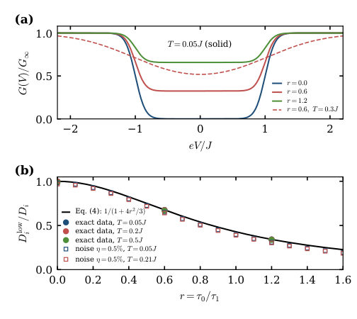
<figcaption class="paper-figure-caption"><b>Fig 1.</b> FIG. 2. Calibration-free bound on the local QFI. (a) Normalized conductance of the isolated dimer at T = 0.05J for r = τ0/τ1 = 0, 0.6 and 1.2 (solid) and at T = 0.3J with r = 0.6 (dashed), for a lock-in amplitude of 0.02J. (b) Dlow i /Di versus r. The line shows Eq. (4). Filled symbols are optimized bounds for exact spectra (h = T/32 at 0.05J and T/64 otherwise). Open symbols are bounds for noise η = 0.5%, 181 bias points and a joint confidence level of 95%.</figcaption>
</figure>
<figure class="paper-figure-card">
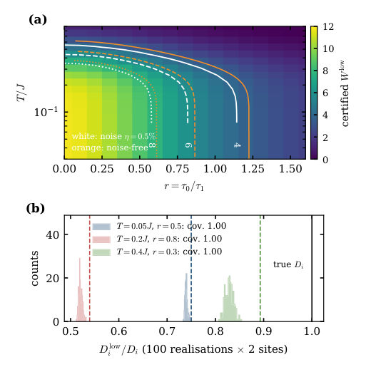
<figcaption class="paper-figure-caption"><b>Fig 2.</b> FIG. 3. Certification from noisy spectra. (a) Bound W low = 2(Dlow 1 + Dlow 2 ) for the isolated dimer (η = 0.5%, 181 bias points, joint confidence level 95%, noise-free data with tolerances). White lines are the contours W low = 4, 6 and 8, and orange lines are the noise-free boundaries. (b) Dlow i /Di for 100 noise realizations per site at (T/J, r) = (0.05, 0.5), (0.2, 0.8) and (0.4, 0.3). Dashed lines show Eq. (4). The frac- tions exceeding 4, 6 and 8 are 1, 1 and 1, then 1, 0.48 and 0, then 1, 1 and 0.</figcaption>
</figure>
<figure class="paper-figure-card">
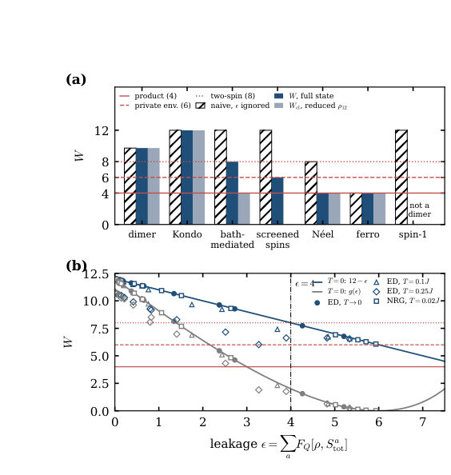
<figcaption class="paper-figure-caption"><b>Fig 3.</b> FIG. 4. States that mimic entanglement and Kondo screening. (a) Naive estimate 2(D1 + D2) (hatched), full- state W (blue) and reduced Wcl (gray) for the isolated dimer (T = 0.3J), the Kondo-coupled dimer (JK = 0.1J, T → 0), the bath-mediated state, privately screened spins, a N´eel product state, a ferromagnetic dimer and a misidentified spin- 1 ion. Lines mark the thresholds. (b) W (blue) and Wcl (gray) of the Kondo-coupled dimer versus ϵ. Circles are from exact diagonalization with discretized baths (JK/J = 0.05– 3.5), filled for T →0 and open for T = 0.1J and 0.25J. Squares are from NRG with continuous bands at T = 0.02J. Lines show Eq. (8).</figcaption>
</figure>
</div>

<p><strong>Summary.</strong> This paper presents a novel theoretical technique to certify nonlocal spin entanglement by analyzing local tunneling spectra. It overcomes the apparent mismatch between local measurements and non-local entanglement by employing fundamental physical constraints like spin sum rules. The resulting method provides a quantitative, calibration-free bound on the collective quantum Fisher information, establishing a new route for quantum characterization in solid-state systems.</p>
<p><strong>Why it may be interesting.</strong> This work provides a powerful, experimentally grounded theoretical tool to probe non-local quantum correlations in condensed matter systems using only local spectroscopic measurements, which is highly relevant for understanding quantum materials.</p>
<details>
<summary>Detailed structure</summary>
<p><strong>Main problem.</strong> The paper addresses the fundamental challenge of certifying nonlocal quantum entanglement using only local measurements, specifically local tunneling spectroscopy.</p>
<p><strong>Main result.</strong> By leveraging strong physical constraints like spin sum rules and total-spin conservation, the authors establish a rigorous, calibration-free method to derive a lower bound on the collective quantum Fisher information, thereby certifying entanglement.</p>
<p><strong>Method.</strong> The methodology involves deriving local Quantum Fisher Information (QFI) bounds from inelastic electron tunneling spectra (IETS) and then combining these local bounds using total-spin conservation to obtain a bound on the collective entanglement witness.</p>
<p><strong>Model / system.</strong> The primary system studied is an exchange-coupled spin dimer ($S_1, S_2$) coupled to a metallic substrate (electron bath $E$) via Kondo exchange ($J_K$). Theoretical analysis is performed using NRG and SDP techniques on various spin clusters.</p>
<p><strong>Key observables.</strong> Local Quantum Fisher Information ($D_i$), Collective Quantum Fisher Information ($W$), Leakage parameter ($\epsilon$), and various entanglement thresholds (e.g., $W=4, 6, 8$).</p>
<p><strong>Important parameters / regimes.</strong> Temperature ($T/J$), coupling strengths ($J_K/J$), and the ratio of bath bandwidth to coupling ($W_b/J$).</p>
<p><strong>Assumptions / limitations.</strong> The method assumes the system obeys strong physical constraints (sum rules, conservation laws) and that the measurement process is weak enough to maintain thermal equilibrium.</p>
<p><strong>Figures summary.</strong> Figures illustrate the process flow, showing how sum rules yield local QFI bounds, and how total-spin conservation combines these into a collective bound ($W$), which is then compared against theoretical thresholds for different entanglement regimes.</p>
<p><strong>Paper structure.</strong> The paper develops the theoretical framework by first establishing local QFI bounds from IETS, then using total-spin conservation to elevate these to a collective entanglement witness ($W$), and finally applying this framework to model systems like Kondo-coupled dimers and Heisenberg chains.</p>
</details>
<details>
<summary>Abstract</summary>
<p>Quantum entanglement is intrinsically nonlocal, whereas tunneling spectroscopy measures one site at a time. We show that this apparent mismatch can be overcome: local tunneling spectra can certify spin entanglement without coherent control or absolute intensity calibration. An exact spin sum rule turns the high-bias conductance into an internal normalization, allowing the inelastic spin-flip weight to place a lower bound on the local quantum Fisher information. Total-spin conservation then fixes the otherwise inaccessible intersite fluctuation, converting two local spectra into a bound on a collective entanglement witness. We incorporate coupling to the substrate through a spectroscopic bound on spin leakage, while a hierarchy of thresholds distinguishes entanglement between the spins from entanglement with their environment. Including instrumental broadening and noise, the resulting certificate holds at a stated confidence level. These results establish a route for extracting nonlocal quantum information from equilibrium local spectroscopy.</p>
</details>
<p><sub><a href="#top">↑ back to top</a></sub></p>

<p><a id="paper-2610.25233"></a></p>
<h3 id="noise-awareness-in-quantum-software-testing-an-empirical-landscape-analysis"><a href="http://arxiv.org/abs/2610.25233v1">Noise-Awareness in Quantum Software Testing: An Empirical Landscape Analysis</a></h3>
<p><strong>Authors:</strong> Mir Mohammad Yousuf, Shabir Ahmad Sofi, Bisma Majid<br>
<strong>Type:</strong> theory · <strong>Category:</strong> other · <strong>PDF:</strong> <a href="https://arxiv.org/pdf/2610.25233v1">https://arxiv.org/pdf/2610.25233v1</a><br>
<strong>Analysis basis:</strong> full PDF text, analyzed in chunks
<strong>Topic relevance:</strong> <code>QC/QI experiment</code> <strong>2/5</strong> · <code>quantum measurements</code> <strong>2/5</strong> · <code>analog quantum simulation</code> <strong>1/5</strong> · <code>methods for driven-dissipative</code> <strong>1/5</strong></p>
<div class="figure-strip-hint">↔ Scroll figures horizontally</div>
<div class="paper-figures-scroll">
<figure class="paper-figure-card">
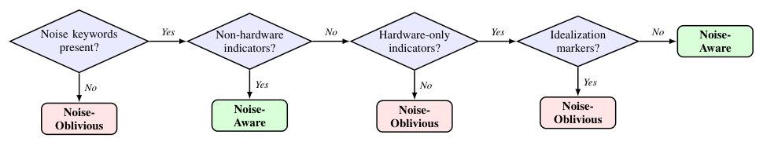
<figcaption class="paper-figure-caption"><b>Fig 1.</b> Fig. 1. Decision process for noise-awareness classification. Any non-hardware noise indicator (strong, other, or weak in Table II) is sufficient on its own; hardware-only indicators count as noise-aware unless suppressed by an explicit idealization statement. A single weak indicator as the only evidence, and hardware-only matches, additionally trigger a manual review flag (Section IV-G).</figcaption>
</figure>
<figure class="paper-figure-card">
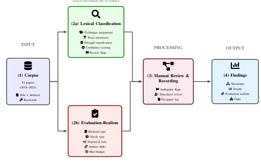
<figcaption class="paper-figure-caption"><b>Fig 2.</b> Fig. 2. Hierarchical workflow of the two-pipeline methodology. The lexical classification pipeline applies regex-based matching for testing-technique and noise-awareness assignment, and raises review flags for ambiguous cases. The evaluation-realism attributes (backend type, oracle type, statistical-test usage, shot budget, and artifact availability) are sourced according to the protocol described in Section IV-E, which records each attribute only when explicitly stated. Both streams converge at the manual-review-and-recording stage, where flagged papers are inspected, final categories are recorded, and supporting rationale is logged.</figcaption>
</figure>
<figure class="paper-figure-card">
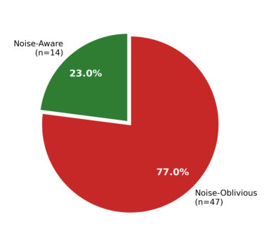
<figcaption class="paper-figure-caption"><b>Fig 3.</b> Fig. 3. Overall distribution of noise-awareness in quantum software testing research (N = 61, 2018–2025). Of the analyzed papers, 47 (77.0%) are noise-oblivious and 14 (23.0%) explicitly consider noise or NISQ hardware constraints.</figcaption>
</figure>
<figure class="paper-figure-card">
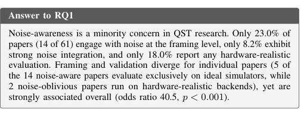
<figcaption class="paper-figure-caption"><b>Fig 4.</b> Figure 4 presents the distribution of noise-aware and noise- oblivious studies across the eight primary testing paradigms and the residual Other category.</figcaption>
</figure>
<figure class="paper-figure-card">
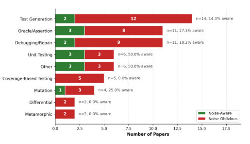
<figcaption class="paper-figure-caption"><b>Fig 5.</b> Fig. 4. Distribution of noise-aware (green) and noise-oblivious (red) studies across eight primary testing paradigms and a residual Other category. Test generation dominates with 14 papers, of which only 2 explicitly consider noise. Unit testing and the residual Other category exhibit the highest noise-awareness rates (3 of 6 papers each, 50.0%). Coverage-based testing (0/5), metamorphic testing (0/2), and differential testing (0/2) contain no noise-aware contributions in the analyzed corpus.</figcaption>
</figure>
</div>

<p><strong>Summary.</strong> This paper systematically analyzes the state of Quantum Software Testing (QST) by surveying 61 academic papers. It reveals that most current testing methods ignore hardware noise inherent to NISQ devices, pointing to a major gap in the field. The work provides a reusable framework to guide future research toward developing robust, hardware-aware testing practices.</p>
<p><strong>Why it may be interesting.</strong> While not directly focused on AMO Hamiltonian simulation, the paper's deep dive into the <em>limitations</em> of current computational models (simulators vs. hardware) and the need for statistical rigor in measurement outcomes is highly relevant to understanding the practical boundaries of quantum simulation.</p>
<details>
<summary>Detailed structure</summary>
<p><strong>Main problem.</strong> The paper addresses the critical gap in Quantum Software Testing (QST) methodologies regarding explicit accounting for hardware noise and the realities of Noisy Intermediate-Scale Quantum (NISQ) execution environments.</p>
<p><strong>Main result.</strong> The analysis found that the vast majority (77.0%) of existing QST research is noise-oblivious, indicating a significant methodological gap in handling hardware imperfections.</p>
<p><strong>Method.</strong> A systematic empirical landscape analysis was conducted across 61 QST papers (2018-2025) using a deterministic, taxonomy-guided framework to classify noise-awareness and evaluation realism.</p>
<p><strong>Model / system.</strong> The focus is on the abstract software testing methodologies applied to quantum computation running on NISQ hardware (e.g., superconducting qubits, trapped ions). The system behavior is characterized by probabilistic outcomes influenced by decoherence and gate errors.</p>
<p><strong>Key observables.</strong> Noise-awareness rate, evaluation realism (testing on physical hardware vs. ideal simulators), and performance across eight distinct testing paradigms.</p>
<p><strong>Important parameters / regimes.</strong> NISQ era constraints (decoherence time, gate fidelity), and the proportion of noise-aware contributions (only 23.0% overall).</p>
<p><strong>Assumptions / limitations.</strong> The analysis assumes that a systematic, taxonomy-guided framework can accurately quantify the maturity and focus of a rapidly evolving research field.</p>
<p><strong>Figures summary.</strong> Not specified by the notes, but the analysis quantifies noise-awareness rates across different testing paradigms.</p>
<p><strong>Paper structure.</strong> The paper introduces the problem (NISQ noise challenge), details the systematic empirical analysis framework, presents quantitative results showing the low rate of noise-aware work, and concludes by outlining structural gaps for future research.</p>
</details>
<details>
<summary>Abstract</summary>
<p>Noisy Intermediate-Scale Quantum (NISQ) hardware has transformed quantum computing into a practical experimental platform while introducing fundamental challenges associated with hardware noise, decoherence, and probabilistic execution. Although quantum software testing (QST) has rapidly emerged as an active research area, it remains unclear to what extent existing testing methodologies explicitly engage with noisy and hardware-constrained execution environments. This paper presents a systematic empirical landscape analysis of noise-awareness in QST research through a deterministic, taxonomy-guided analytical framework applied to 61 papers published between 2018 and 2025 across eight testing paradigms, contrasting how contributions are framed with how they are evaluated. Among the analyzed papers, 47 (77.0%) are noise-oblivious and only 14 (23.0%) explicitly engage with noise-related execution concerns, while only 11 (18.0%) report evaluation on physical hardware or a noisy simulator. Test generation, the largest paradigm, exhibits a noise-awareness rate of only 14.3%, and debugging and repair 18.2%; coverage-based, metamorphic, and differential testing contain no noise-aware contributions. Noise-aware methodologies emerged late and remain outnumbered in all analyzed years. Framing and evaluation are strongly associated (odds ratio 40.5, p &lt; 0.001) yet diverge for individual papers: 5 of the 14 noise-aware papers evaluate only on ideal simulators. Inferential statistical tests are reported in only 16.4% of papers. The classification framework was validated against a blinded, human-coded reference sample, achieving almost perfect inter-rater agreement on testing-technique classification and substantial agreement on noise-awareness. The framework provides a reusable empirical basis for longitudinal analysis of hardware-conscious testing practice.</p>
</details>
<p><sub><a href="#top">↑ back to top</a></sub></p>

<p><a id="paper-2610.26154"></a></p>
<h3 id="quantum-control-as-renormalization-group-flow"><a href="http://arxiv.org/abs/2610.26154v1">Quantum control as renormalization group flow</a></h3>
<p><strong>Authors:</strong> Zuo Wang, Paul M. Schindler, Modesto Orozco-Ruiz, Nguyen H. Le, Florian Mintert, Marin Bukov<br>
<strong>Type:</strong> theory · <strong>Category:</strong> statistical mechanics · <strong>PDF:</strong> <a href="https://arxiv.org/pdf/2610.26154v1">https://arxiv.org/pdf/2610.26154v1</a><br>
<strong>Analysis basis:</strong> full PDF text, analyzed in chunks
<strong>Topic relevance:</strong> <code>analog quantum simulation</code> <strong>2/5</strong> · <code>Keldysh / 2PI / non-Gaussian methods</code> <strong>1/5</strong> · <code>QC/QI experiment</code> <strong>1/5</strong> · <code>methods for driven-dissipative</code> <strong>1/5</strong> · <code>quantum measurements</code> <strong>1/5</strong></p>
<div class="figure-strip-hint">↔ Scroll figures horizontally</div>
<div class="paper-figures-scroll">
<figure class="paper-figure-card">
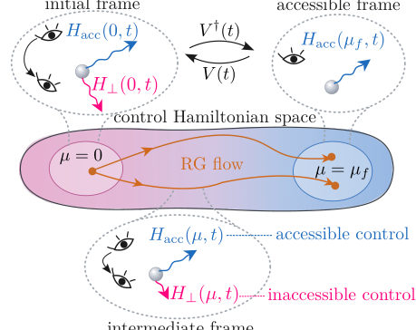
<figcaption class="paper-figure-caption"><b>Fig 1.</b> FIG. 1. Renormalization group flow in the space of control Hamiltonians. The middle oval shows the space of time-dependent control Hamiltonians, shaded from the initial seed at µ = 0 (pink) to the subspace of purely accessible con- trols at µ = µf →∞(blue). Each point is a time-dependent Hamiltonian; the orange curves are flow trajectories along the flow parameter µ. The two trajectories shown share the same seed but end at different accessible control Hamiltonians, cor- responding to different frames V (µ, t) and, equivalently, gen- erators K(µ, t) through Eq. (4). Dashed ovals illustrate three stages of the flow. The initial frame at µ = 0 has a large experimentally inaccessible part...</figcaption>
</figure>
<figure class="paper-figure-card">
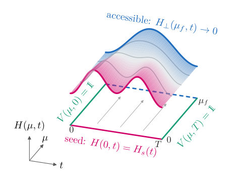
<figcaption class="paper-figure-caption"><b>Fig 2.</b> FIG. 2. Domain and boundary conditions of the con- trol flow. The generator couples the Hamiltonian at neigh- boring times through ˙K(µ, t), so the flow of Eq. (5) is a sys- tem of partial differential equations on the two-dimensional domain spanned by the physical time t ∈[0, T] and the flow parameter µ ≥0, sketched as the horizontal plane. The sur- face above it is the Hamiltonian H(µ, t) with each line cut at a fixed µ. The flow deforms the control schedule continuously as µ grows in the arrow’s direction. The seed Hamiltonian fixes the µ = 0 edge, H(µ = 0, t) = Hs(t) (red). On the two temporal edges (green) the frame transformation is fixed to the identity, V (µ, t = 0) = V (µ, t = T) =...</figcaption>
</figure>
<figure class="paper-figure-card">
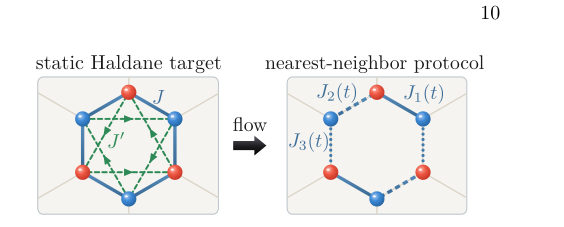
<figcaption class="paper-figure-caption"><b>Fig 3.</b> FIG. 3. Haldane’s model as a control target, and its flow to an implementable protocol. The left panel illus- trates the static Haldane Hamiltonian of Eq. (32), which has a real-valued nearest-neighbor hopping J (solid), a complex- valued next-nearest-neighbor hopping J′ (dashed), and a po- tential offset M between the red and blue sublattices. The right panel illustrates the fixed point of the flow, i.e., the ac- cessible implementation protocol of Eq. (35) which has one complex-valued time-dependent hopping Jα(t) per bond di- rection; both the next-nearest-neighbor hopping and the sub- lattice offset have been decimated by the flow. The result- ing nearest-neighbor protocol reproduces the...</figcaption>
</figure>
<figure class="paper-figure-card">
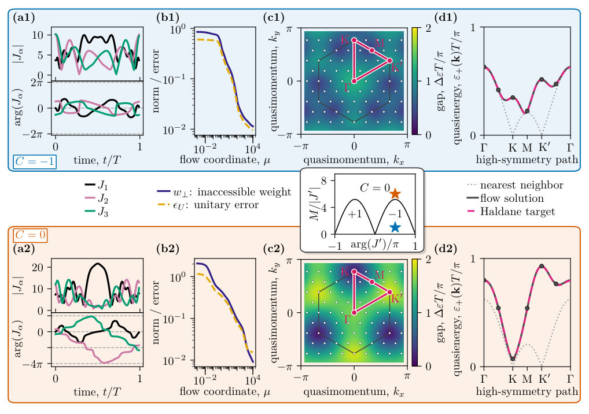
<figcaption class="paper-figure-caption"><b>Fig 4.</b> FIG. 4. CtrlsRG flow behavior and validation of the flow-engineered Haldane model. The panels are grouped by topology: the blue group above is the topological case, M/|J′| = 1 and C = −1, and the orange group below is the trivial one, M/|J′| = 6 and C = 0. The Haldane phase diagram at the center gives the lower-band Chern number of the static target Hamiltonian in each region, with stars marking the parameters for the two targets. (a1,a2) Magnitude and phase of the three converged hopping schedules over one drive period [legend between top and bottom panels]. Three schedules break the C3 symmetry. (b1,b2) Inaccessible-control weight w⊥(µ) in Eq. (12) (blue) and unitary error ϵU(µ) of the...</figcaption>
</figure>
<figure class="paper-figure-card">
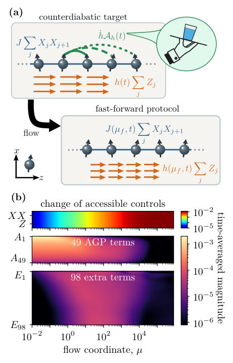
<figcaption class="paper-figure-caption"><b>Fig 5.</b> FIG. 5. CtrlsRG flow to a fast-forward (FF) proto- col in the transverse-field Ising chain. (a) Schematic illustration of the flow from the seed counterdiabatic (CD) Hamiltonian to the fast-forward protocol. The seed contains the static Ising interaction J, the transverse field h(t), and the nonlocal adiabatic gauge potential (AGP) term ˙h(t)Ah(t), which enforces adiabatic evolution but is inaccessible. The flow decimates the AGP term and produces a fast-forward protocol with only the renormalized Ising interaction J(µf, t) and transverse field h(µf, t). (b) Time-averaged magnitude of every operator coefficient as a function of the flow parameter µ. For the two accessible controls,...</figcaption>
</figure>
</div>

<p><strong>Summary.</strong> This work introduces the Control Renormalization Group (CtrlsRG) framework, which maps quantum control design onto the mathematical structure of the Renormalization Group flow. By engineering this flow, the authors can systematically transform an ideal but inaccessible Hamiltonian into a physically implementable, accessible form. This offers a unifying principle for designing high-fidelity quantum gates and protocols.</p>
<p><strong>Why it may be interesting.</strong> It provides a powerful, systematic, and theoretically grounded methodology (RG flow) to solve complex, non-adiabatic quantum control problems, which is highly relevant for designing experiments with trapped ions or superconducting qubits.</p>
<details>
<summary>Detailed structure</summary>
<p><strong>Main problem.</strong> The paper develops a novel framework to design accessible quantum control protocols by structurally mapping the problem onto the Renormalization Group (RG) flow.</p>
<p><strong>Main result.</strong> This Control RG (CtrlsRG) framework provides a unifying perspective on Hamiltonian engineering and unitary quantum control, successfully realizing protocols that surpass the accuracy of standard Floquet engineering methods.</p>
<p><strong>Method.</strong> The core method involves constructing a flow equation in the space of time-dependent Hamiltonians, parameterized by a flow variable $\mu$, which smoothly deforms an initially inaccessible Hamiltonian to an experimentally accessible fixed-point manifold while preserving the target unitary.</p>
<p><strong>Model / system.</strong> The framework applies to general quantum control problems governed by time-dependent Hamiltonians $H(t)$, demonstrated using models like the Haldane model and large transverse-field Ising chains.</p>
<p><strong>Key observables.</strong> Target unitary fidelity ($F_\ell$), Hamiltonian weight outside the accessible subspace, and the flow parameter $\mu$.</p>
<p><strong>Important parameters / regimes.</strong> Flow parameter $\mu$, drive frequency $\omega$, and system size $L$.</p>
<p><strong>Assumptions / limitations.</strong> The method assumes the existence of a flow that monotonically reduces the weight of inaccessible Hamiltonian terms while preserving the target unitary.</p>
<p><strong>Figures summary.</strong> Figures illustrate the RG flow in the Hamiltonian space, showing the transition from an initial state ($\mu=0$) to a final accessible state ($\mu 	o \infty$), and compare the infidelity of Floquet vs. CtrlsRG protocols.</p>
<p><strong>Paper structure.</strong> The paper introduces the CtrlsRG concept by drawing an analogy to Hamiltonian RG, details the flow equation governing the Hamiltonian evolution, and validates the framework through two distinct applications: nonperturbative Floquet engineering and fast-forward driving.</p>
</details>
<details>
<summary>Abstract</summary>
<p>The Renormalization Group (RG) establishes relations between effective descriptions of physical systems at different scales; in Hamiltonian RG, these relations induce a flow in the space of Hamiltonians. In direct correspondence, we design an RG framework for quantum control by constructing a flow in the space of time-dependent Hamiltonians. A prescribed control subspace, selected to contain only experimentally accessible terms, forms the fixed-point manifold, while the flow preserves the target unitary and monotonically reduces the Hamiltonian weight outside this subspace. Exploiting the freedom in constructing the flow, we introduce flow-equation engineering to enhance the versatility of the framework for diverse control problems, including time-periodic and open-interval smooth protocols with prescribed endpoints. We provide two disparate applications to exhibit the utility of our approach: (i) Nonperturbative Floquet engineering beyond the regime of validity of high-frequency expansions, which we demonstrate by constructing an implementable time-periodic protocol for the Haldane model; (ii) Accessible fast-forward driving from unit-fidelity counterdiabatic evolution, which we showcase for large transverse-field Ising chains away from the adiabatic regime by compressing the long-range multibody adiabatic gauge potential into the original time-dependent Ising control schedules. Our control RG framework reveals a unifying perspective on Hamiltonian engineering and unitary quantum control, and can serve as an organizing principle behind seemingly disparate nonequilibrium quantum dynamics.</p>
</details>
<p><sub><a href="#top">↑ back to top</a></sub></p>

<p><a id="paper-2610.25885"></a></p>
<h3 id="quantum-computing-for-plasma-physics-in-magnetic-confinement-fusion"><a href="http://arxiv.org/abs/2610.25885v1">Quantum computing for plasma physics in magnetic-confinement fusion</a></h3>
<p><strong>Authors:</strong> Chenjia Zhu, Shuai Xu, Yousheng Zhang, Yunfeng Liang, Yue Yang<br>
<strong>Type:</strong> theory · <strong>Category:</strong> quantum information and computing · <strong>PDF:</strong> <a href="https://arxiv.org/pdf/2610.25885v1">https://arxiv.org/pdf/2610.25885v1</a><br>
<strong>Analysis basis:</strong> full PDF text, analyzed in chunks
<strong>Topic relevance:</strong> <code>analog quantum simulation</code> <strong>2/5</strong> · <code>Keldysh / 2PI / non-Gaussian methods</code> <strong>1/5</strong> · <code>methods for driven-dissipative</code> <strong>1/5</strong></p>
<div class="figure-strip-hint">↔ Scroll figures horizontally</div>
<div class="paper-figures-scroll">
<figure class="paper-figure-card">
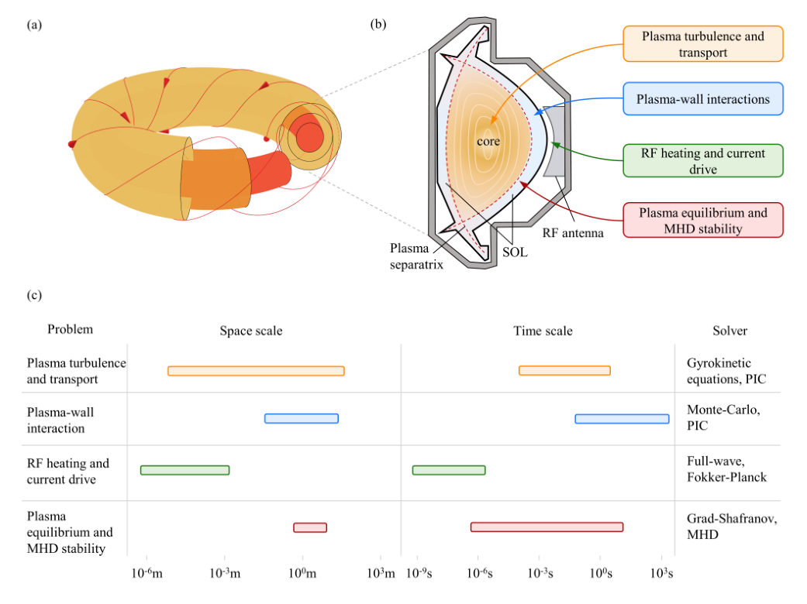
<figcaption class="paper-figure-caption"><b>Fig 1.</b> FIG. 1. An overview of MCF and its computational challenges. (a) Schematic of MCF plasmas in toroidal plasma equilibrium. Red curves denote representative magnetic field lines, while the translucent layers represent nested magnetic-flux surfaces. (b) Simplified poloidal cross- section of the SPARC tokamak adapted from Ref. [18], highlighting the plasma and vacuum vessel. Computational problems are associated with their respective regions. (c) Computational problems in MCF, and their representative spatial and temporal scales and commonly used numerical approaches [2].</figcaption>
</figure>
<figure class="paper-figure-card">
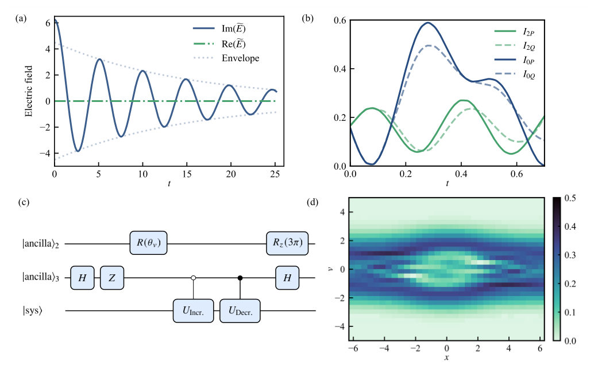
<figcaption class="paper-figure-caption"><b>Fig 2.</b> FIG. 2. Results and circuit diagrams of studies of plasma transport. (a) The Landau damping result adapted from Fig. 5 in Ref. [112], where e𝐸 denotes the Fourier component of the electric field for certain wave number, and the 𝑦-axis is scaled accordingly. (b) Evolution of the normalized 𝑙= 0, 2 mode populations in the pre-quantized 𝐼𝑙𝑃and second-quantized 𝐼𝑙𝑄models, adapted from Fig. 5 of Ref. [123]. (c) The quantum circuit for the block encoding of the effective Hamiltonian of the 1D Vlasov equation adapted from Ref. [125], where 𝑈Incr. and 𝑈Decr. are unitary shift operators, sys denotes the system register encoding the spatial coordinate, ancilla denotes the auxiliary qubits. (d)...</figcaption>
</figure>
<figure class="paper-figure-card">
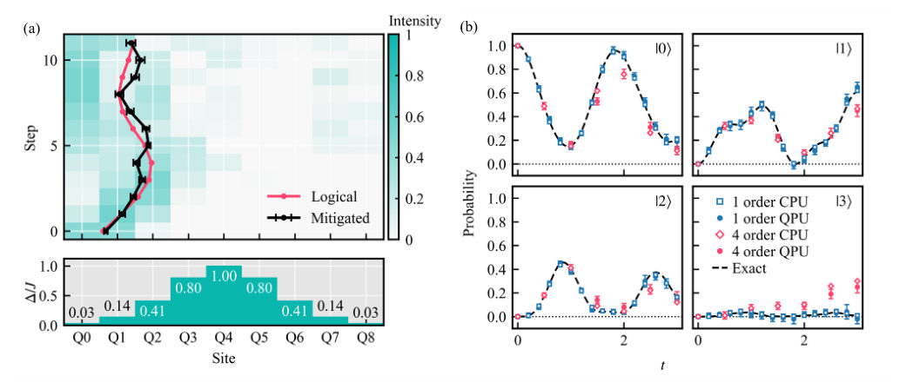
<figcaption class="paper-figure-caption"><b>Fig 3.</b> FIG. 3. Hardware results for plasma wave simulations. (a) Error-mitigated propagation of an electromagnetic wave packet through an inho- mogeneous overdense plasma with a Gaussian density profile, adapted from Fig. 4(c) of Ref. [131]. The upper panel shows the wave-packet intensity and center-of-mass trajectory, while the lower panel gives the normalized plasma-frequency profile. (b) Time evolution of state oc- cupation probabilities under combined three- and four-wave interactions simulated using first- and fourth-order product formulas at fixed gate depth, adapted from Fig. 3(a) of Ref. [135]. The four panels represent states |0⟩-|3⟩with different energy distributions among the waves....</figcaption>
</figure>
<figure class="paper-figure-card">
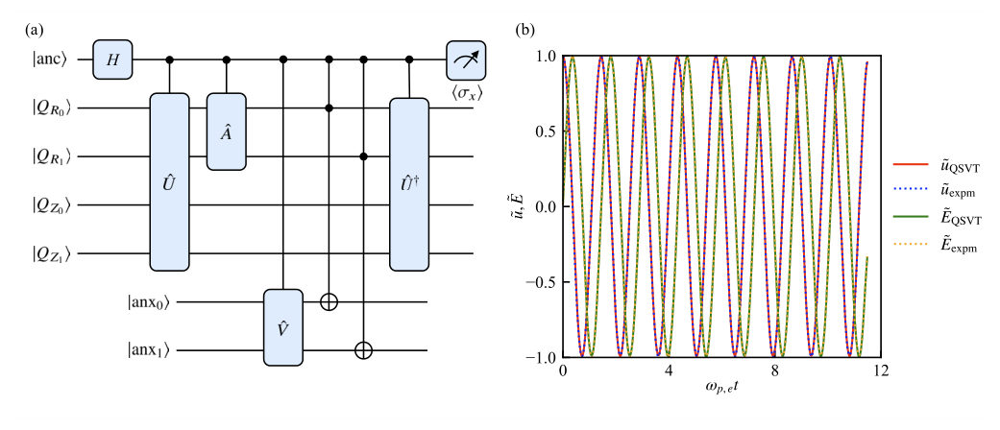
<figcaption class="paper-figure-caption"><b>Fig 4.</b> FIG. 4. Results and circuit diagrams in plasma equilibrium studies. (a) Quantum circuit for evaluating the radial derivative contribution of the Grad-Shafranov operator, adapted from Fig. 3(a) in Ref. [140], where 𝑄𝑅and 𝑄𝑍denote the radial and vertical coordinate registers, anc and aux denote the measurement and auxiliary qubits, respectively, and ˆ𝑈, ˆ𝐴, and ˆ𝑉represent the parameterized ansatz, shift operator, and coefficient-encoding vector unitary, respectively. (b) Time evolution of the fluid velocity ˜𝑢and electric field ˜𝐸at 𝑥= 0, adapted from Fig. 2 in Ref. [143]. The subscripts QSVT and expm denote results obtained using QSVT and classical matrix exponentiation, respectively.</figcaption>
</figure>
<figure class="paper-figure-card">
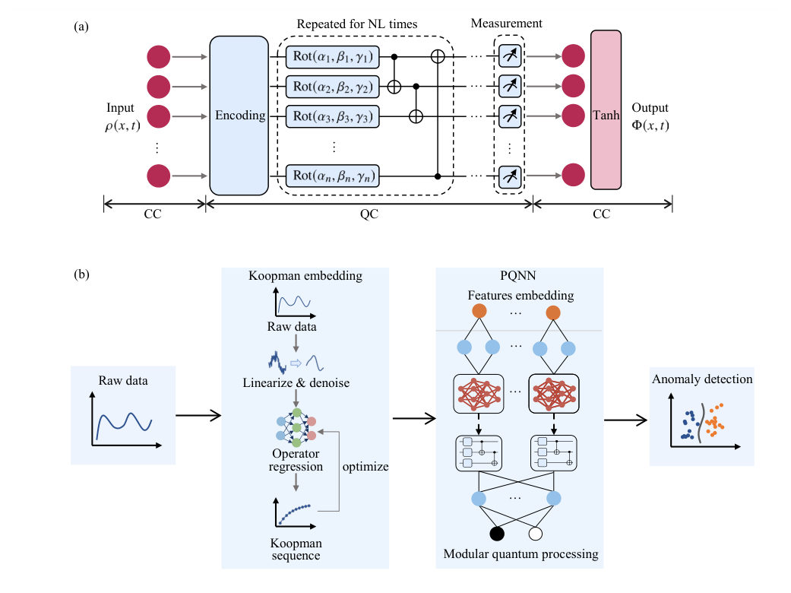
<figcaption class="paper-figure-caption"><b>Fig 5.</b> FIG. 5. Diagrams of plasma-related quantum machine learning studies. (a) The classical-quantum-classical diagram to solve the Poisson equation adapted from Fig. 1 in Ref. [144], where the input is the charge density 𝜌(𝑥, 𝑡), the output is the electric potential Φ(𝑥, 𝑡), CC denotes classical computing, and QC denotes quantum computing. (b) The architecture of the Koopman-PQNN framework adapted from Fig. 2 in Ref. [145], where Koopman features extracted from diagnostic signals are processed by parallel quantum circuits for anomaly detection.</figcaption>
</figure>
</div>

<p><strong>Summary.</strong> This review assesses the potential of quantum computing to accelerate plasma simulations for magnetic-confinement fusion. It details the computational bottlenecks arising from high dimensionality and nonlinear dynamics in MCF plasmas. The authors map out a roadmap, highlighting that while quantum methods show promise, current applications are limited and require significant development to tackle full, realistic fusion models.</p>
<p><strong>Why it may be interesting.</strong> It bridges the gap between advanced quantum algorithms (Hamiltonian simulation, solving PDEs) and a major, complex physical system (MCF plasma), suggesting potential quantum applications for non-equilibrium, high-dimensional dynamics.</p>
<details>
<summary>Detailed structure</summary>
<p><strong>Main problem.</strong> Plasma simulations for magnetic-confinement fusion (MCF) are severely bottlenecked by high-dimensional, nonlinear, and multiscale dynamics.</p>
<p><strong>Main result.</strong> The review summarizes current quantum computing studies, concluding that practical quantum advantage for realistic fusion simulations remains a significant gap.</p>
<p><strong>Method.</strong> The paper reviews existing quantum algorithms (e.g., Hamiltonian simulation, HHL) and theoretical approaches to apply quantum computation to plasma physics problems.</p>
<p><strong>Model / system.</strong> The physical system is the plasma within MCF devices (tokamaks/stellarators), governed by complex equations like Vlasov, Fokker-Planck, and MHD equations.</p>
<p><strong>Key observables.</strong> Plasma density, temperature, magnetic fields, current profiles, and stability metrics.</p>
<p><strong>Important parameters / regimes.</strong> Extremely wide spatio-temporal scales, high dimensionality, and strong nonlinear coupling.</p>
<p><strong>Assumptions / limitations.</strong> Current quantum studies are largely restricted to linearized equations, reduced models, or isolated subroutines, not full realistic simulations.</p>
<p><strong>Figures summary.</strong> Figure 1 provides an overview of MCF computational challenges, schematically illustrating the device, plasma regions, and associated computational problems/scales.</p>
<p><strong>Paper structure.</strong> The paper reviews the computational bottlenecks in classical plasma simulations, surveys existing quantum approaches across different plasma physics sub-domains (kinetic, wave, equilibrium), and concludes with a roadmap for achieving quantum advantage.</p>
</details>
<details>
<summary>Abstract</summary>
<p>Plasma simulations for magnetic-confinement fusion (MCF) involve high-dimensional kinetic dynamics, strong nonlinear coupling, complex geometries, and multiscale spatiotemporal behavior, imposing severe computational bottlenecks. While quantum computing offers a potential alternative for accelerating plasma simulation problems, its practical advantage for fusion research has not yet been demonstrated. We review existing quantum computing studies across kinetic dynamics, wave interactions, equilibrium, and macroscopic stability, evaluating their hardware implementations and operational bottlenecks. Current studies remain largely restricted to linearized equations, reduced models, or isolated computational subroutines, leaving a substantial gap from realistic fusion simulations. We summarize key problem characteristics, including high dimensionality, structured dynamics, and measurement requirements, under which plasma applications are most likely to yield a quantum advantage. Guided by these considerations, we highlight potential approaches and present a roadmap toward practical quantum advantage of simulating plasma in MCF.</p>
</details>
<p><sub><a href="#top">↑ back to top</a></sub></p>

<p><a id="paper-2610.26637"></a></p>
<h3 id="average-lower-bound-on-magnetic-double-well-tunneling-with-asymptotically-large-well-separation"><a href="http://arxiv.org/abs/2610.26637v1">Average lower bound on magnetic double-well tunneling with asymptotically large well separation</a></h3>
<p><strong>Authors:</strong> Charles L. Fefferman, Say-Yeon Kwon, Jacob Shapiro, Michael I. Weinstein<br>
<strong>Type:</strong> theory · <strong>Category:</strong> other · <strong>PDF:</strong> <a href="https://arxiv.org/pdf/2610.26637v1">https://arxiv.org/pdf/2610.26637v1</a><br>
<strong>Analysis basis:</strong> full PDF text, analyzed in chunks
<strong>Topic relevance:</strong> <code>Keldysh / 2PI / non-Gaussian methods</code> <strong>2/5</strong> · <code>analog quantum simulation</code> <strong>1/5</strong></p>
<div class="figure-strip-hint">↔ Scroll figures horizontally</div>
<div class="paper-figures-scroll">
<figure class="paper-figure-card">
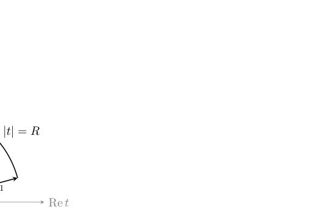
<figcaption class="paper-figure-caption"><b>Fig 1.</b> Figure 1: An indented sector contour, drawn schematically for 0 &lt; θ1 &lt; θ2 &lt; π/2.</figcaption>
</figure>
</div>

<p><strong>Summary.</strong> This theoretical paper derives sharp lower bounds for quantum tunneling in a double-well potential subjected to a magnetic field. Using advanced complex analysis, the authors prove that the tunneling rate decays exponentially with the separation distance, providing a precise asymptotic form that improves upon previous estimates. This work is significant for understanding barrier penetration in mesoscopic quantum systems.</p>
<p><strong>Why it may be interesting.</strong> The rigorous mathematical techniques used to derive these exponential decay bounds are highly relevant to understanding tunneling phenomena in quantum systems, particularly those involving magnetic fields or geometric confinement, which is a core topic in AMO physics and quantum field theory.</p>
<details>
<summary>Detailed structure</summary>
<p><strong>Main problem.</strong> The paper aims to establish rigorous lower bounds on the tunneling coefficient and the splitting of the two lowest eigenvalues for a quantum system modeled by a double-well potential subjected to a constant perpendicular magnetic field.</p>
<p><strong>Main result.</strong> The authors prove that the tunneling coefficient and eigenvalue splitting decay asymptotically as $e^{-b\lambda d_1^2 - C d_1^{1+\delta}}$ for large separations $d_1$, outside a set of measure zero.</p>
<p><strong>Method.</strong> The proof combines complex analysis techniques, specifically using the explicit Landau resolvent kernel and complex analytic estimates for logarithmic averages of the hopping coefficient.</p>
<p><strong>Model / system.</strong> The system is described by a Hamiltonian involving tunneling between two identical, smooth, compactly supported potential wells in the presence of a constant perpendicular magnetic field. The analysis focuses on the asymptotic behavior of the hopping coefficient $
ho(d_1)$ as the well separation $d_1$ tends to infinity.</p>
<p><strong>Key observables.</strong> The hopping coefficient ($
ho(d_1)$) and the splitting of the two lowest eigenvalues ($\Delta(d_1)$).</p>
<p><strong>Important parameters / regimes.</strong> The well separation $d_1$ (tending to $\infty$), the magnetic field parameter $b$, and the potential scaling parameter $\lambda$.</p>
<p><strong>Assumptions / limitations.</strong> The analysis assumes the existence of a small positive magnetic field $b$ and relies on complex analytic continuation techniques applied to the integral representation of the hopping coefficient.</p>
<p><strong>Figures summary.</strong> The notes mention Figure 1, which illustrates an indented sector contour used in the complex analysis proof for analytic continuation.</p>
<p><strong>Paper structure.</strong> The paper proceeds by setting up the Hamiltonian and defining the tunneling observables. It then utilizes complex analysis to analyze the function $
ho(z)$ by extending the separation parameter $d_1$ to the complex plane, culminating in the proof of the pointwise lower bounds (Theorems 1.1 and 1.2).</p>
</details>
<details>
<summary>Abstract</summary>
<p>We study tunneling between two identical, smooth, compactly supported potential wells in a constant perpendicular magnetic field, with the coupling and magnetic field fixed and the well separation tending to infinity. For a sufficiently small positive magnetic field, we prove lower bounds on the hopping coefficient and on the splitting of the two lowest eigenvalues outside a set of separations of density zero. If the well centers are separated by $2d_1$ and the magnetic field strength is $bλ$, the lower bounds have the form $e^{-bλd_1^2-Cd_1^{1+δ}}$ for every fixed $δ\in(0,1)$. No radial or reflection symmetry of the single-well potential is assumed. The proof combines the explicit Landau resolvent kernel with a complex analytic estimate for logarithmic averages of the hopping coefficient.</p>
</details>
<p><sub><a href="#top">↑ back to top</a></sub></p>

<p><a id="paper-2610.25703"></a></p>
<h3 id="distributed-phase-tags-a-locality-preserving-realification-compiler-for-misty-state-quantum-programs"><a href="http://arxiv.org/abs/2610.25703v1">Distributed Phase Tags: A Locality-Preserving Realification Compiler for Misty-State Quantum Programs</a></h3>
<p><strong>Authors:</strong> Dan-Adrian German, Tony Newton<br>
<strong>Type:</strong> theory · <strong>Category:</strong> quantum information and computing · <strong>PDF:</strong> <a href="https://arxiv.org/pdf/2610.25703v1">https://arxiv.org/pdf/2610.25703v1</a><br>
<strong>Analysis basis:</strong> full PDF text, analyzed in chunks
<strong>Topic relevance:</strong> <code>quantum measurements</code> <strong>2/5</strong> · <code>analog quantum simulation</code> <strong>1/5</strong></p>
<div class="figure-strip-hint">↔ Scroll figures horizontally</div>
<div class="paper-figures-scroll">
<figure class="paper-figure-card">
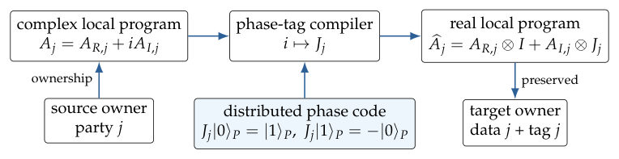
<figcaption class="paper-figure-caption"><b>Fig 1.</b> Figure 1: Compiler architecture. The nonlocal phase code is prepared once; every dynamic command remains local to its source owner.</figcaption>
</figure>
<figure class="paper-figure-card">
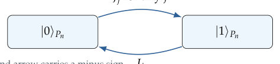
<figcaption class="paper-figure-caption"><b>Fig 2.</b> Figure 2: Logical complex structure from local real actions. Every party has a different physical tag but the same logical action of multiplication by i.</figcaption>
</figure>
<figure class="paper-figure-card">
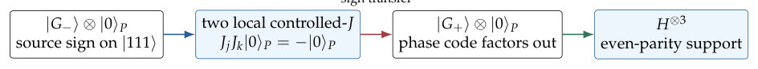
<figcaption class="paper-figure-caption"><b>Fig 3.</b> Figure 3: The GHZ Y/Y branch. The 64-path cancellation of the original derivation is compressed to one logical sign-transfer identity.</figcaption>
</figure>
<figure class="paper-figure-card">
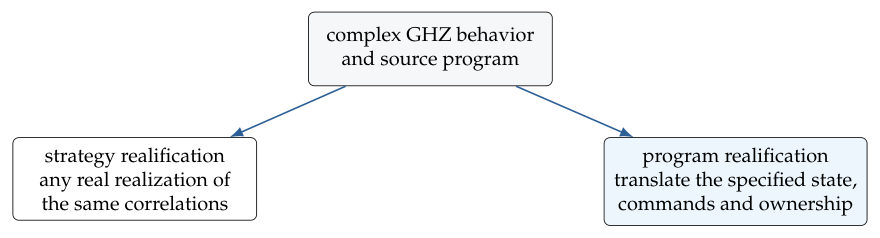
<figcaption class="paper-figure-caption"><b>Fig 4.</b> Figure 4: Two different realification goals. The six-rebit construction addresses the stronger structure-preserving problem, not minimal dimension for the GHZ correlation.</figcaption>
</figure>
</div>

<p><strong>Summary.</strong> This paper presents a compiler that translates complex quantum circuits into an equivalent, locality-preserving computation using only real-valued operations within a 'misty-state' framework. By encoding the imaginary component using local phase tags, it successfully simulates complex quantum gates while guaranteeing the preservation of measurement probabilities and the interaction structure. This provides a powerful theoretical tool for realizing complex quantum algorithms on hardware restricted to real Hamiltonians.</p>
<p><strong>Why it may be interesting.</strong> For theorists working on open quantum systems or quantum computation, this work provides a rigorous, resource-aware method for simulating complex quantum dynamics using only real physical resources, which is crucial for physical implementations.</p>
<details>
<summary>Detailed structure</summary>
<p><strong>Main problem.</strong> The paper addresses the challenge of simulating complex quantum computations, which naturally involve complex amplitudes, using only real-valued operations while preserving locality in a multipartite setting.</p>
<p><strong>Main result.</strong> It develops a locality-preserving compiler that translates complex quantum circuits into a real 'misty-state' intermediate language, proving that the resulting real circuit maintains the original computational-basis measurement probabilities.</p>
<p><strong>Method.</strong> The core method involves recasting the simulation into a syntax-directed compiler that encodes the complex structure using local, auxiliary phase tags (rebits) for each party.</p>
<p><strong>Model / system.</strong> The model is multipartite quantum computation. The simulation is achieved by adjoining a two-dimensional real/imaginary degree of freedom to the Hilbert space, leading to the 'misty-state' formalism.</p>
<p><strong>Key observables.</strong> Computational-basis measurement probabilities, the run-time interaction graph, and the overhead (proven to be one rebit per party).</p>
<p><strong>Important parameters / regimes.</strong> The number of parties ($n$), the local phase-reference codewords ($|0
angle_{Pn}, |1
angle_{Pn}$), and the structure of the complex gate $A = A_R + iA_I$.</p>
<p><strong>Assumptions / limitations.</strong> The proof is restricted to finite party-local pure-state circuits followed by computational-basis measurements; extensions to mixed states or general measurements require different semantics.</p>
<p><strong>Figures summary.</strong> Figures illustrate the compiler architecture, showing how nonlocal phase codes are prepared locally, and demonstrate the logical structure of the GHZ state translation using local $J$ operators.</p>
<p><strong>Paper structure.</strong> The paper introduces the problem, defines the realification map and the compiler rules (e.g., $A_j 	o A_R \otimes I + A_I \otimes J_j$), proves the intertwining theorem for general circuits, and applies the framework to the canonical three-party GHZ program.</p>
</details>
<details>
<summary>Abstract</summary>
<p>Complex amplitudes can be simulated over real Hilbert spaces by adjoining a two-dimensional real/imaginary degree of freedom. In a multipartite program, however, one globally shared phase tag is not a locality-preserving program transformation: every party would have to act on the same auxiliary system. We recast the distributed real simulation of multipartite quantum mechanics as a syntax-directed compiler into a real misty-state intermediate language. For $n$ parties we give explicit phase-reference codewords $|0\rangle_{P_n}$ and $|1\rangle_{P_n}$ on $n$ local tags and prove that the same real operator $J=XZ$ on any single tag realizes the logical action of multiplication by $i$. If a complex party-local gate is $A=A_R+iA_I$, its real translation is \[   \widehat A_j=A_R\otimes I+A_I\otimes J_j, \] which acts only on party $j$'s data and local phase tag. We prove an intertwining theorem for arbitrary finite party-local pure-state circuits, exact preservation of computational-basis measurement probabilities, preservation of the run-time interaction graph, and one-rebit-per-party overhead. For the canonical three-party GHZ program, the translation lies entirely inside the ordinary black-and-white misty gate fragment: controlled-$J$ replaces the complex phase operation, while the invariant $J_jJ_k|0\rangle_P=-|0\rangle_P$ transfers the required branch sign. This yields a short correctness proof for all four promised GHZ inputs and explains the earlier 64-path cancellation calculation at a single logical phase-code boundary. We distinguish this program realification problem from the weaker task of finding any real strategy with the same correlations, and state precisely which parts are known real-Hilbert-space simulation and which parts belong to the misty-language compilation layer developed here.</p>
</details>
<p><sub><a href="#top">↑ back to top</a></sub></p>

<p><a id="paper-2610.24518"></a></p>
<h3 id="exact-quantum-query-complexity-of-the-five-bit-symmetric-boolean-function-math935math"><a href="http://arxiv.org/abs/2610.24518v1">Exact Quantum Query Complexity of the Five-Bit Symmetric Boolean Function $\Exact^5_{3,4}$</a></h3>
<p><strong>Authors:</strong> Guoliang Xu, Haoran Zhang, Mengfan Wu, Songyao Xue, Mingke Liu<br>
<strong>Type:</strong> theory · <strong>Category:</strong> quantum information and computing · <strong>PDF:</strong> <a href="https://arxiv.org/pdf/2610.24518v1">https://arxiv.org/pdf/2610.24518v1</a><br>
<strong>Analysis basis:</strong> full PDF text, analyzed in chunks
<strong>Topic relevance:</strong> <code>quantum measurements</code> <strong>2/5</strong> · <code>Keldysh / 2PI / non-Gaussian methods</code> <strong>1/5</strong></p>
<div class="figure-strip-hint">↔ Scroll figures horizontally</div>
<div class="paper-figures-scroll">
<figure class="paper-figure-card">
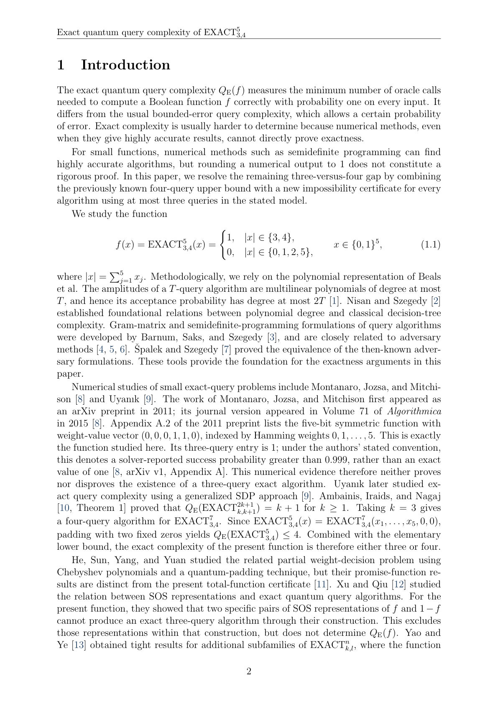
<figcaption class="paper-figure-caption"><b>Fig 1.</b> Low-resolution page preview, page 2</figcaption>
</figure>
<figure class="paper-figure-card">
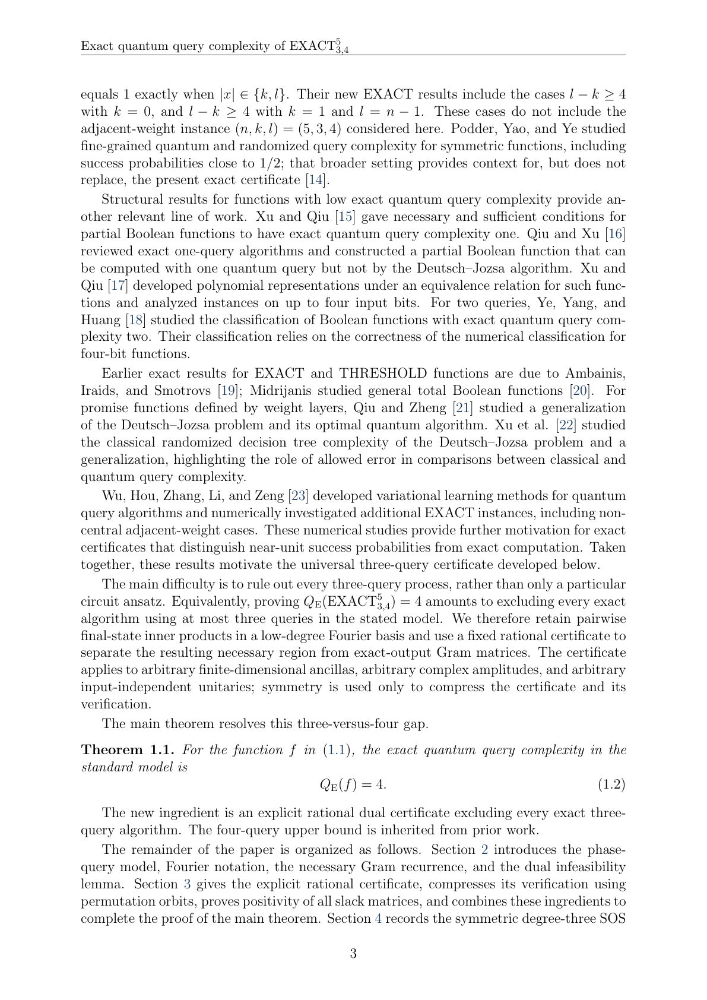
<figcaption class="paper-figure-caption"><b>Fig 2.</b> Low-resolution page preview, page 3</figcaption>
</figure>
<figure class="paper-figure-card">
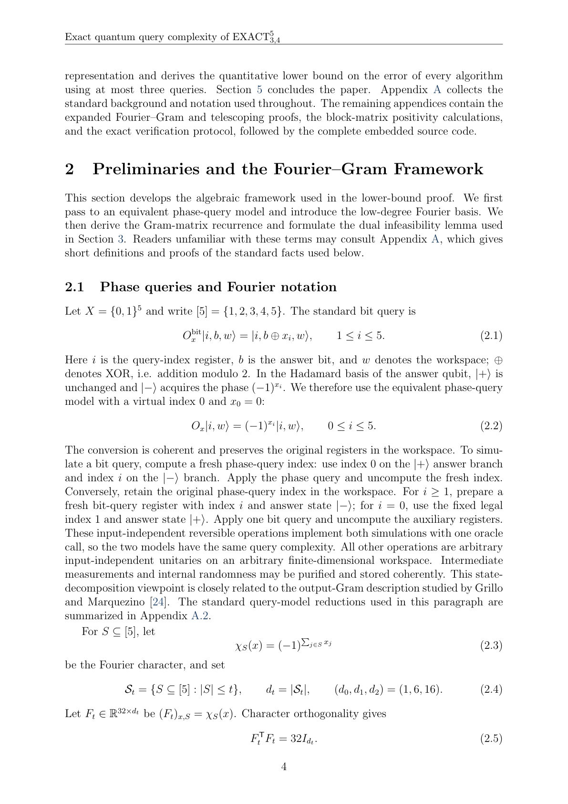
<figcaption class="paper-figure-caption"><b>Fig 3.</b> Low-resolution page preview, page 4</figcaption>
</figure>
<figure class="paper-figure-card">
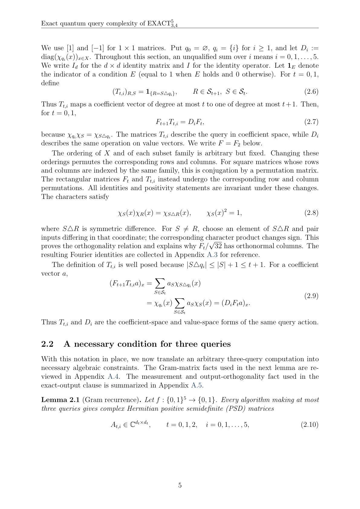
<figcaption class="paper-figure-caption"><b>Fig 4.</b> Low-resolution page preview, page 5</figcaption>
</figure>
<figure class="paper-figure-card">
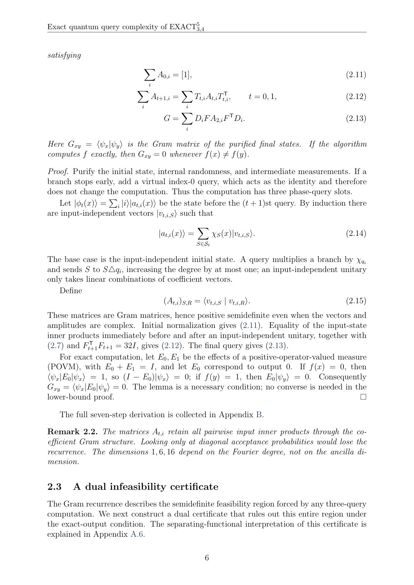
<figcaption class="paper-figure-caption"><b>Fig 5.</b> Low-resolution page preview, page 6</figcaption>
</figure>
</div>

<p><strong>Summary.</strong> This paper rigorously establishes that the exact quantum query complexity for the $    ext{EXACT}^5_{3,4}$ function is exactly 4. It achieves this by constructing a complex rational dual certificate that mathematically rules out any exact quantum algorithm using only three queries. The work represents a significant theoretical advance in the field of quantum query complexity.</p>
<p><strong>Why it may be interesting.</strong> While focused on Boolean functions, the rigorous mathematical machinery—using SDPs, Fourier analysis, and algebraic certificates—is highly relevant to understanding the computational limits of quantum information processing.</p>
<details>
<summary>Detailed structure</summary>
<p><strong>Main problem.</strong> The paper determines the exact quantum query complexity of the five-bit symmetric Boolean function $  ext{EXACT}^5_{3,4}$, which is 1 exactly on inputs of Hamming weight 3 or 4.</p>
<p><strong>Main result.</strong> The exact quantum query complexity is proven to be 4, resolving a long-standing 'three-versus-four gap' in the field.</p>
<p><strong>Method.</strong> The proof uses advanced techniques involving constructing and verifying positive definite rational dual certificates derived from Gram matrices of Fourier coefficients to establish the lower bound.</p>
<p><strong>Model / system.</strong> The analysis is conducted in the exact quantum query complexity model, comparing the standard bit-query model to an equivalent phase-query model.</p>
<p><strong>Key observables.</strong> The primary observable is the quantum query complexity, $QE(f)$, and the diagnostic tool is the positive semidefiniteness of constructed certificate matrices.</p>
<p><strong>Important parameters / regimes.</strong> The function is defined over 5 bits, and the complexity is compared against the number of queries (3 vs 4).</p>
<p><strong>Assumptions / limitations.</strong> The lower bound proof assumes the existence of a fixed rational dual certificate whose slack matrices are all positive definite, ruling out exact computation with fewer queries.</p>
<p><strong>Figures summary.</strong> No specific figures are described, but the notes detail the construction and verification of various matrices (e.g., $Z_{t,i}$) and the passing of multiple algebraic and Fourier sum checks.</p>
<p><strong>Paper structure.</strong> The paper progresses by introducing the phase-query model and Fourier basis, establishing necessary conditions via Gram recurrence, constructing the explicit rational dual certificate, proving its positivity, and finally deriving the quantitative lower bound to confirm $QE(f)=4$.</p>
</details>
<details>
<summary>Abstract</summary>
<p>Let \(f = \text{EXACT}^5_{3,4}\) be the Boolean function that equals 1 exactly on inputs of Hamming weight 3 or 4. Earlier numerical studies reported success probabilities close to one using three queries, but the existence of an exact three-query algorithm had remained unresolved. This paper settles this problem by proving that the exact quantum query complexity of \(f\) is \(4\). For the lower bound, we express every three-query algorithm through layer-by-layer Gram matrices of low-degree Fourier coefficients. We then construct a fixed rational dual certificate whose slack matrices are all positive definite. This certificate separates the necessary Gram-matrix region from the exact-output condition and therefore rules out every exact algorithm using at most three queries in the stated model. The positivity verification reduces to five small rational matrices and Sylvester's criterion. For the upper bound, we invoke the previously known four-query algorithm for the seven-bit function \(\text{EXACT}^7_{3,4}\) and apply the standard padding reduction. To quantify the near-exact behavior, we use the same certificate to derive a valid, though not claimed tight, lower bound \(\frac{25600}{43779488192449}>0\) on the worst-case error of every algorithm using at most three queries. This positive error gap is compatible with the near-unit success probabilities reported in earlier numerical studies, which do not establish exact computation.</p>
</details>
<p><sub><a href="#top">↑ back to top</a></sub></p>

<p><a id="paper-2610.25894"></a></p>
<h3 id="how-quantum-is-light-concepts-measures-and-applications-of-optical-quantumness"><a href="http://arxiv.org/abs/2610.25894v1">How Quantum Is Light? Concepts, Measures, and Applications of Optical Quantumness</a></h3>
<p><strong>Authors:</strong> Soumyakanti Bose, Hyukjoon Kwon, Yong Siah Teo, Hyunseok Jeong, Luis L. Sánchez-Soto<br>
<strong>Type:</strong> theory · <strong>Category:</strong> quantum information and computing · <strong>PDF:</strong> <a href="https://arxiv.org/pdf/2610.25894v1">https://arxiv.org/pdf/2610.25894v1</a><br>
<strong>Analysis basis:</strong> full PDF text, analyzed in chunks
<strong>Topic relevance:</strong> <code>quantum measurements</code> <strong>2/5</strong> · <code>interference shaping light</code> <strong>1/5</strong></p>
<div class="figure-strip-hint">↔ Scroll figures horizontally</div>
<div class="paper-figures-scroll">
<figure class="paper-figure-card">
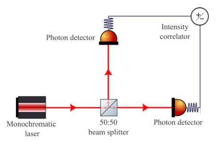
<figcaption class="paper-figure-caption"><b>Fig 1.</b> FIG. 1. Schematic of Hanbury Brown–Twiss experiment where an incoming signal is split into a half-silvered mirror and then fed to two detectors registering the intensity. Sub- sequently the data is fed to a monitor to analyze intensity correlation between the detectors.</figcaption>
</figure>
<figure class="paper-figure-card">
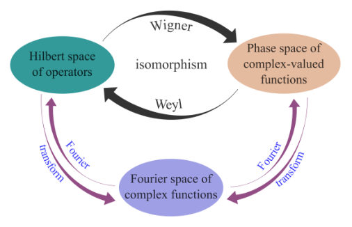
<figcaption class="paper-figure-caption"><b>Fig 2.</b> FIG. 2. Schematic representation of Wigner-Weyl correspon- dence between Hilbert-space operators and Phase-space dis- tributions through operator-Fourier transformation</figcaption>
</figure>
<figure class="paper-figure-card">
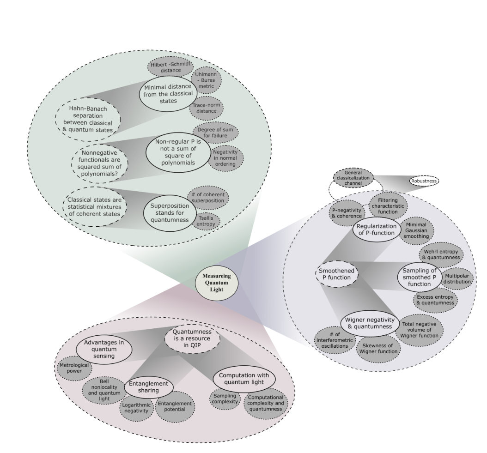
<figcaption class="paper-figure-caption"><b>Fig 3.</b> FIG. 3. Summary of various approaches in quantifying the optical quantumness. Different measures have been divided into three major groups based on their basic character and operational perspectives, such as (a) Hilbert-space based approaches, (b) phase-space based approaches, and (c) resource-theoretic approaches. Underlying principles have been encircled with dashed lines, while their manifestation is represented in circles with solid lines. Satellite dotted-gray circles stand for the specific proposal.</figcaption>
</figure>
</div>

<p><strong>Summary.</strong> This review provides a comprehensive framework for quantifying the 'quantumness' of light by examining both theoretical phase-space distributions and experimental measurements. It establishes that quantum features manifest as non-classical signatures, such as negative values in the Wigner function or sub-unity second-order correlation functions. Ultimately, it frames quantumness quantification as a practical necessity for realizing quantum advantage.</p>
<p><strong>Why it may be interesting.</strong> It provides a unified, comprehensive review connecting abstract mathematical concepts of quantum state characterization (phase-space negativity) directly to measurable physical signatures in quantum optics, which is crucial for quantum information applications.</p>
<details>
<summary>Detailed structure</summary>
<p><strong>Main problem.</strong> The paper addresses the fundamental challenge of quantifying the 'quantumness' of a quantum state of light and developing a systematic framework to distinguish it from classical states.</p>
<p><strong>Main result.</strong> Quantumness can be characterized using phase-space distributions (like the Wigner function) which exhibit non-positive values, and operationally via intensity correlations like $g^{(2)}(0) < 1$ (anti-bunching).</p>
<p><strong>Method.</strong> The review synthesizes theoretical tools, including the Glauber-Sudarshan P representation and phase-space mapping (Wigner-Weyl correspondence), with operational measurements like the Hanbury Brown-Twiss experiment.</p>
<p><strong>Model / system.</strong> The primary system is quantum states of light (optical fields). The theoretical models involve phase-space representations (P, W, Q functions) used to map quantum operators onto quasiprobability distributions.</p>
<p><strong>Key observables.</strong> The normalized second-order correlation function $g^{(2)}(	au)$, the negativity/singularity of the P function, and the non-positive values of the Wigner function.</p>
<p><strong>Important parameters / regimes.</strong> The quantum nature is signaled by deviations from classical bounds, such as $g^{(2)}(0) < 1$ for anti-bunching.</p>
<p><strong>Assumptions / limitations.</strong> The analysis relies on the mathematical properties of quasiprobability distributions, acknowledging that the P-representation's singularities complicate direct measurement.</p>
<p><strong>Figures summary.</strong> The notes mention schematics for the HBT experiment setup and the Wigner–Weyl correspondence, illustrating the theoretical mapping between operators and phase-space functions.</p>
<p><strong>Paper structure.</strong> The paper progresses by introducing the problem of quantifying quantumness, detailing theoretical tools (P, W, Q functions) and their mathematical relationships, and finally grounding the concept in operational measurements like intensity correlations.</p>
</details>
<details>
<summary>Abstract</summary>
<p>Quantum states are ultimately responsible for numerous counterintuitive phenomena that defy classical intuition. As the development of quantum technologies accelerates, our ability to harness these quantum resources becomes essential. This review addresses a fundamental question. How do we quantify the quantumness of a state, and which specific traits distinguish it from its classical counterparts? We examine quantumness through both theoretical and operational lenses, providing a clear framework for state characterization. Ultimately, we demonstrate that certifying quantumness is not just a theoretical exercise. It is a practical necessity for identifying, and realizing quantum advantage in real-world applications.</p>
</details>
<p><sub><a href="#top">↑ back to top</a></sub></p>

<p><a id="paper-2610.26279"></a></p>
<h3 id="physics-anchored-residual-quantum-neural-networks-for-cloud-cover-parameterization"><a href="http://arxiv.org/abs/2610.26279v1">Physics-anchored residual quantum neural networks for cloud-cover parameterization</a></h3>
<p><strong>Authors:</strong> Zhuo Wang, Ce Yu, Bin Yang<br>
<strong>Type:</strong> both · <strong>Category:</strong> disordered systems and neural networks · <strong>PDF:</strong> <a href="https://arxiv.org/pdf/2610.26279v1">https://arxiv.org/pdf/2610.26279v1</a><br>
<strong>Analysis basis:</strong> full PDF text, analyzed in chunks
<strong>Topic relevance:</strong> <code>methods for driven-dissipative</code> <strong>2/5</strong> · <code>analog quantum simulation</code> <strong>1/5</strong></p>
<div class="figure-strip-hint">↔ Scroll figures horizontally</div>
<div class="paper-figures-scroll">
<figure class="paper-figure-card">
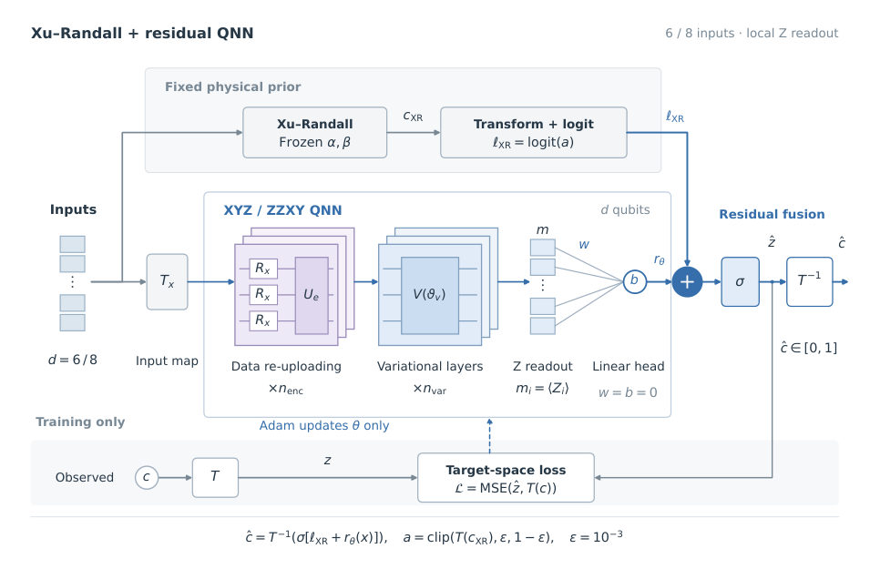
<figcaption class="paper-figure-caption"><b>Fig 1.</b> Figure 1: Physics-anchored residual QNN. The fixed branch supplies logit a(x). The quantum branch supplies local expectations mi = ⟨Zi⟩to one affine head. Its zero initialization recovers the clipped anchor. The branches combine before the sigmoid, and the inverse target transform returns physical cloud cover. Training loss is evaluated before that inverse transform; the dashed arrow updates only trainable parameters. Overlapping blocks and representative wires abbreviate the six- or eight-qubit circuit, not its actual layer count. The figure’s T and Tx denote the target and input transforms.</figcaption>
</figure>
<figure class="paper-figure-card">
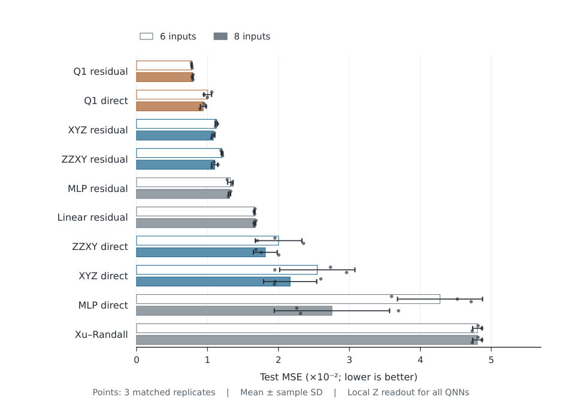
<figcaption class="paper-figure-caption"><b>Fig 2.</b> Figure 2: Test-set performance across input configurations. Each row groups six-input (open) and eight- input (filled) bars, whose lengths show mean physical-space MSE. Small points represent three matched replicates; whiskers show ± one sample SD (n = 3, 20,000 test cells per replicate). QNNs are blue, Q1 adaptations ochre, and remaining controls gray. Every residual model is anchored to Xu–Randall; all QNNs use local Z readout. Q1 uses a larger architecture and a separate, longer training protocol. Axis values are expressed in units of 10−2; lower values indicate lower error. Source data: runs.csv and summary.csv.</figcaption>
</figure>
<figure class="paper-figure-card">
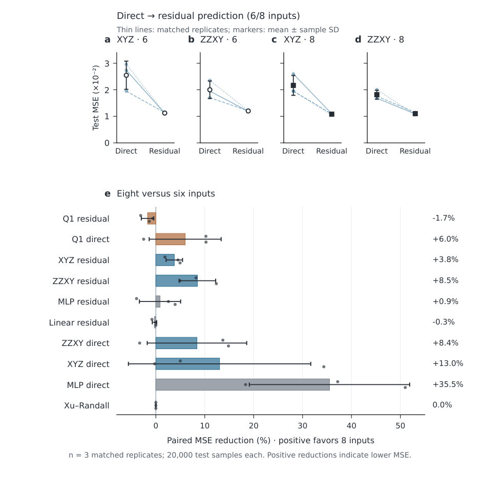
<figcaption class="paper-figure-caption"><b>Fig 3.</b> Figure 3: Paired effects of residual prediction and input configuration. a–d, direct-to-residual QNN comparisons for six-input XYZ, six-input ZZXY, eight-input XYZ, and eight-input ZZXY, respectively. Each thin line connects one matched replicate; small endpoints show its physical-space MSE. Large open circles (six inputs) and filled squares (eight inputs) show means, with whiskers indicating ± one sample SD. e, percentage MSE reductions for eight inputs relative to six, computed within replicate before averaging. Bars and right-hand labels show mean reductions; small points show individual pairs, and whiskers indicate ± one sample SD. Positive values favor eight inputs; colors identify...</figcaption>
</figure>
</div>

<p><strong>Summary.</strong> This work proposes using residual quantum neural networks to improve cloud-cover parameterization in climate models. By training the QNN to predict only a correction term relative to an established physical estimate, the authors achieved substantial reductions in prediction error compared to direct methods. This demonstrates the power of physics-informed machine learning approaches within the quantum circuit framework.</p>
<p><strong>Why it may be interesting.</strong> While the application is climate science, the core methodology—using quantum circuits to learn corrections to physically constrained models—is highly relevant to developing physics-informed neural networks for complex quantum or many-body systems.</p>
<details>
<summary>Detailed structure</summary>
<p><strong>Main problem.</strong> The paper addresses the challenge of accurately parameterizing cloud cover in climate models, a process complicated by coarse spatial resolution and unresolved sub-grid physics.</p>
<p><strong>Main result.</strong> Implementing a residual quantum neural network (QNN) formulation, which learns a correction to a known physical estimate, significantly reduced the test Mean Squared Error (MSE) compared to direct QNN prediction.</p>
<p><strong>Method.</strong> The authors employed an offline residual formulation, training a QNN to predict a correction term to the logit of a fitted Xu–Randall cloud-cover estimate, rather than predicting the cloud cover directly.</p>
<p><strong>Model / system.</strong> The physical system is cloud-cover parameterization within climate models, using data derived from ICON/DYAMOND simulations. The model utilizes compact QNNs with XYZ or ZZXY circuits as the parameterized function class.</p>
<p><strong>Key observables.</strong> Physical-space test Mean Squared Error (MSE) for cloud fraction, $R^2$, Hellinger distance, and Wasserstein distance.</p>
<p><strong>Important parameters / regimes.</strong> Training epochs (e.g., 30 epochs), number of inputs (six or eight), and the specific quantum circuit structure (XYZ, ZZXY).</p>
<p><strong>Assumptions / limitations.</strong> The results do not establish computational quantum advantage or online climate-model skill; the comparison is limited by the specific training budget and matched replicates.</p>
<p><strong>Figures summary.</strong> Figures illustrate the residual QNN structure, comparing test MSE reduction percentages between direct and residual predictions across different input configurations (6 vs 8 inputs).</p>
<p><strong>Paper structure.</strong> The paper introduces the physical problem, details the residual QNN methodology (anchoring to Xu-Randall), presents quantitative comparisons against MLPs and Q1 models using various metrics, and concludes by discussing the limitations regarding quantum advantage.</p>
</details>
<details>
<summary>Abstract</summary>
<p>Compact quantum neural networks have been explored for cloud-cover parameterization, but their predictive value depends on how physical knowledge is incorporated and which classical models provide the reference. We investigate an offline residual formulation that retains a fitted \XR\ cloud-cover estimate and learns a correction to its logit in transformed target space. Using released ICON/DYAMOND-derived data, we compare ten model variants in six- and eight-input settings, with three matched replicates and 10,000 training samples per replicate. All quantum circuits use local Z readout and noiseless exact expectation values. Under a common 30-epoch protocol, residual prediction reduced physical-space test mean squared error relative to direct QNN prediction by 54.3\% and 38.8\% for six-input XYZ and ZZXY circuits, and by 49.2\% and 38.9\% for their eight-input versions. Residual QNNs also outperformed the selected compact residual multilayer perceptron in every paired replicate. A larger, longer-trained Grundner-Q1 adaptation nevertheless achieved lower error: residual Q1 reached mean MSEs of 0.00778 and 0.00791, compared with 0.01124 and 0.01082 for residual XYZ. The results support residual prediction for compact simulated QNNs within the tested budget and establish a clear boundary set by stronger classical references. They do not establish computational quantum advantage or online climate-model skill.</p>
</details>
<p><sub><a href="#top">↑ back to top</a></sub></p>

<p><a id="paper-2610.24629"></a></p>
<h3 id="signed-fk-percolation-in-ising-spin-glasses"><a href="http://arxiv.org/abs/2610.24629v1">Signed FK percolation in Ising spin glasses</a></h3>
<p><strong>Authors:</strong> Alberto Gandolfi, Charles Newman, Danile Stein<br>
<strong>Type:</strong> theory · <strong>Category:</strong> disordered systems and neural networks · <strong>PDF:</strong> <a href="https://arxiv.org/pdf/2610.24629v1">https://arxiv.org/pdf/2610.24629v1</a><br>
<strong>Analysis basis:</strong> full PDF text, analyzed in chunks
<strong>Topic relevance:</strong> <code>Keldysh / 2PI / non-Gaussian methods</code> <strong>2/5</strong> · <code>analog quantum simulation</code> <strong>1/5</strong></p>
<div class="figure-strip-hint">↔ Scroll figures horizontally</div>
<div class="paper-figures-scroll">
<figure class="paper-figure-card">
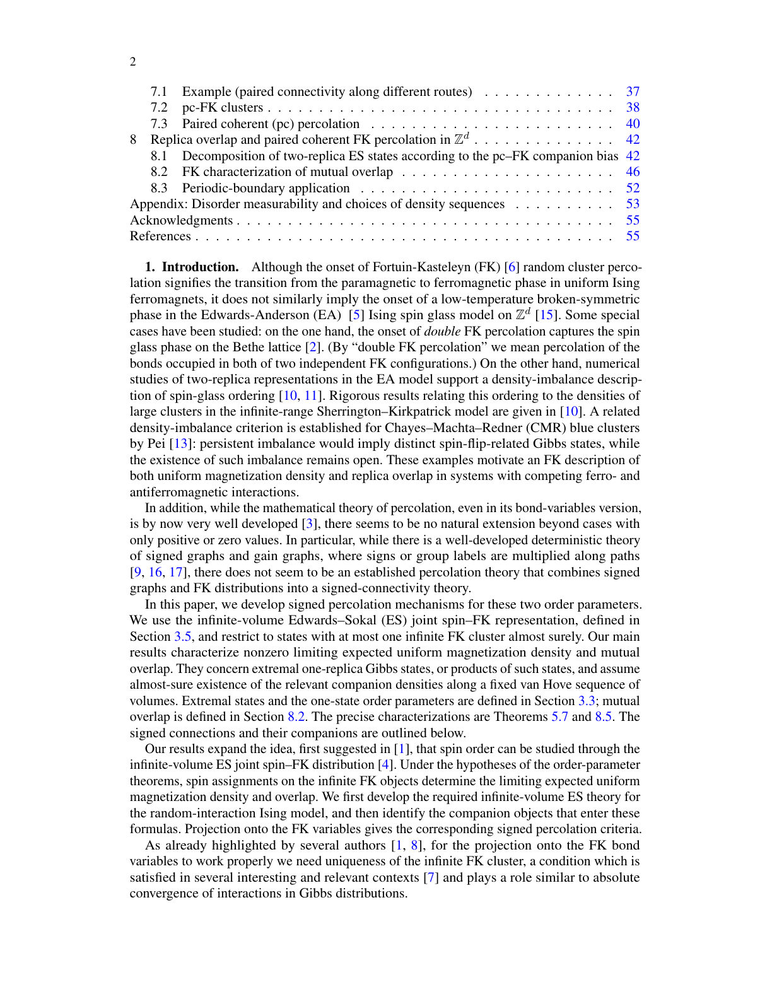
<figcaption class="paper-figure-caption"><b>Fig 1.</b> Low-resolution page preview, page 2</figcaption>
</figure>
<figure class="paper-figure-card">
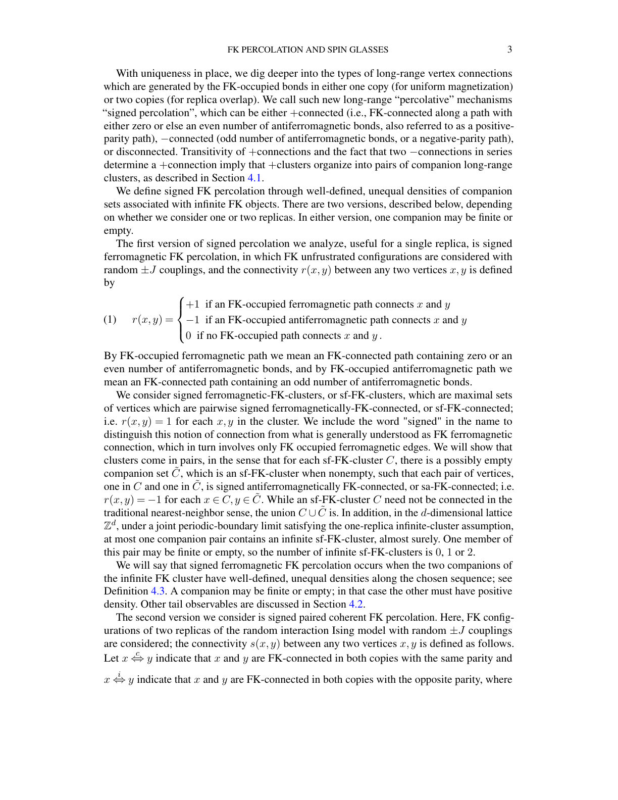
<figcaption class="paper-figure-caption"><b>Fig 2.</b> Low-resolution page preview, page 3</figcaption>
</figure>
<figure class="paper-figure-card">
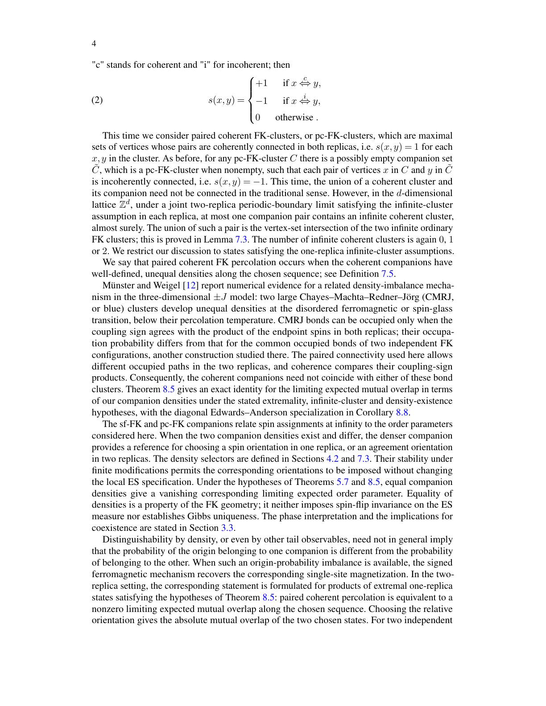
<figcaption class="paper-figure-caption"><b>Fig 3.</b> Low-resolution page preview, page 4</figcaption>
</figure>
<figure class="paper-figure-card">
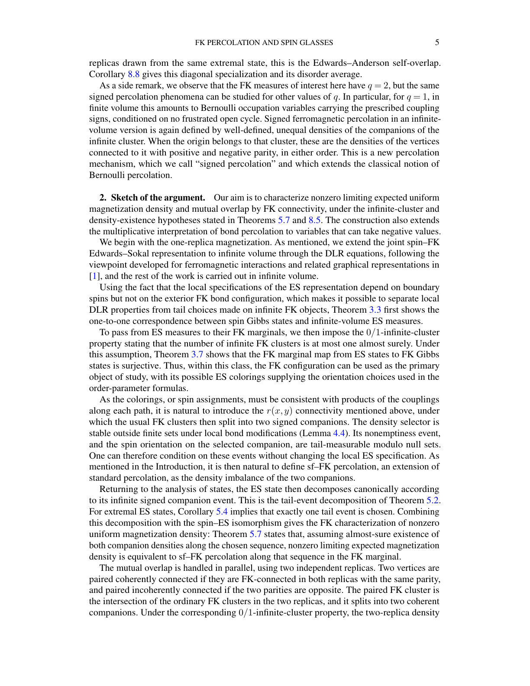
<figcaption class="paper-figure-caption"><b>Fig 4.</b> Low-resolution page preview, page 5</figcaption>
</figure>
<figure class="paper-figure-card">
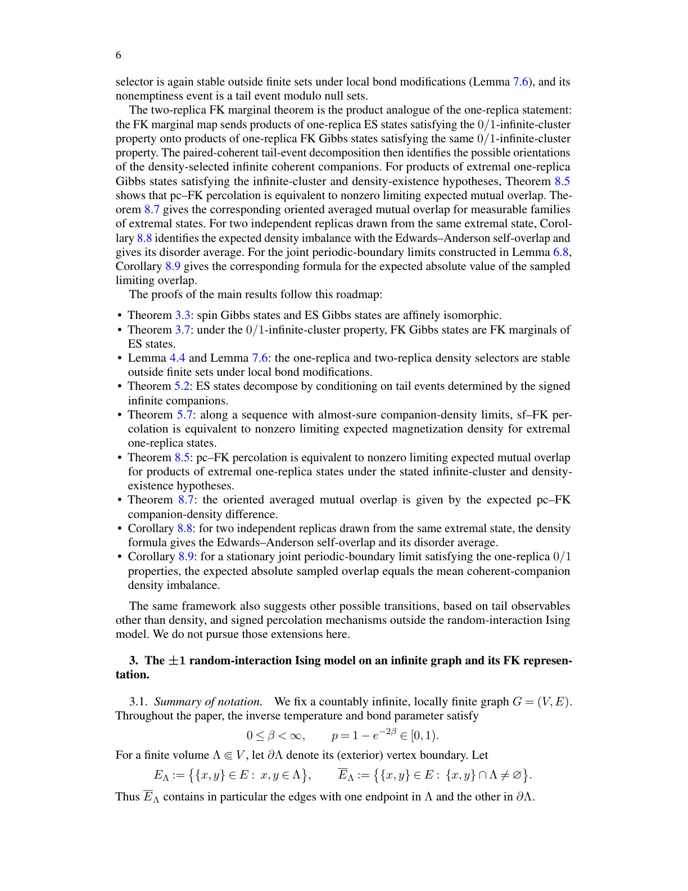
<figcaption class="paper-figure-caption"><b>Fig 5.</b> Low-resolution page preview, page 6</figcaption>
</figure>
</div>

<p><strong>Summary.</strong> This theoretical work develops signed Fortuin-Kasteleyn percolation to characterize order parameters in the random-interaction Ising spin glass. It proves that nonzero magnetization and mutual overlap are mathematically equivalent to specific density imbalances within the associated FK cluster companions. The methodology relies heavily on the Edwards-Sokal representation and advanced ergodic theorems for disordered systems.</p>
<p><strong>Why it may be interesting.</strong> While focused on classical spin glasses, the rigorous mathematical machinery involving percolation, extremal states, and density convergence is highly relevant to understanding phase transitions and order parameters in complex quantum many-body systems.</p>
<details>
<summary>Detailed structure</summary>
<p><strong>Main problem.</strong> The paper aims to characterize two key order parameters in the $\pm J$ random-interaction Ising model: the nonzero uniform magnetization density and the two-replica mutual overlap.</p>
<p><strong>Main result.</strong> It establishes mathematical equivalences between the existence of these non-zero order parameters and the density distinguishability of companion objects derived from signed Fortuin-Kasteleyn (FK) percolation clusters.</p>
<p><strong>Method.</strong> The analysis employs the infinite-volume Edwards–Sokal (ES) joint spin–FK representation, extending connectivity definitions to incorporate the parity of coupling products along open paths (signed FK percolation).</p>
<p><strong>Model / system.</strong> The system is the $\pm J$ random-interaction Ising model defined on an infinite graph ($\mathbb{Z}^d$), analyzed using techniques from statistical mechanics related to extremal Gibbs states.</p>
<p><strong>Key observables.</strong> Nonzero limiting expected uniform magnetization density, two-replica mutual overlap, and the density distinguishability of FK cluster companions.</p>
<p><strong>Important parameters / regimes.</strong> The coupling signs ($\pm J$), the temperature/inverse temperature ($eta$), and the structure of the random couplings ($J$).</p>
<p><strong>Assumptions / limitations.</strong> The analysis critically assumes the existence of at most one infinite FK cluster almost surely, and the almost-sure existence of companion densities along a chosen van Hove sequence.</p>
<p><strong>Paper structure.</strong> The paper develops the theory by first defining signed FK percolation for single replicas (magnetization) and then extending the framework to two independent replicas (mutual overlap), culminating in rigorous theorems linking these physical quantities to companion density properties.</p>
</details>
<details>
<summary>Abstract</summary>
<p>We introduce signed Fortuin-Kasteleyn (FK) percolation for the +/-J random-interaction Ising model to characterize nonzero uniform magnetization density and two-replica overlap within the class of Gibbs distributions whose infinite-volume Edwards-Sokal (ES)/FK representation has at most one infinite FK cluster almost surely. The construction refines ordinary FK connectivity by retaining the parity of coupling products along open paths. Using the infinite-volume ES representation and its DLR equations, we study pairs of companion objects and the compatible spin assignments on them. In one replica, companions are defined by positive-parity FK connections. For extremal states satisfying the infinite-cluster assumption and almost-sure existence of companion densities along the chosen van Hove sequence, nonzero limiting expected magnetization density is equivalent to density distinguishability of the companions of the infinite FK cluster. For two independent replicas, companions are defined by FK connections coherent in parity. For products of extremal one-replica states satisfying the infinite-cluster assumption and almost-sure existence of the companion densities along the chosen sequence, density distinguishability of the companions is equivalent to nonzero limiting expected mutual overlap. For two independent replicas drawn from the same extremal state, this specializes to the Edwards-Anderson self-overlap.</p>
</details>
<p><sub><a href="#top">↑ back to top</a></sub></p>

<p><a id="paper-2610.24925"></a></p>
<h3 id="symmetry-breaking-chelation-enables-room-temperature-all-optical-spin-coherence-readout-of-aqueous-cuii-for-chemoselective-discrimination"><a href="http://arxiv.org/abs/2610.24925v1">Symmetry-breaking chelation enables room-temperature all-optical spin coherence readout of aqueous Cu(II) for chemoselective discrimination</a></h3>
<p><strong>Authors:</strong> Jinlei Li, Qiaoyun Wu, Qiaoqiao Shao, Zhubin Hu, Haitao Sun, Zhenrong Sun, Donghai Feng<br>
<strong>Type:</strong> both · <strong>Category:</strong> other · <strong>PDF:</strong> <a href="https://arxiv.org/pdf/2610.24925v1">https://arxiv.org/pdf/2610.24925v1</a><br>
<strong>Analysis basis:</strong> full PDF text, analyzed in chunks
<strong>Topic relevance:</strong> <code>quantum measurements</code> <strong>2/5</strong> · <code>quantum optics experiment</code> <strong>1/5</strong></p>
<div class="figure-strip-hint">↔ Scroll figures horizontally</div>
<div class="paper-figures-scroll">
<figure class="paper-figure-card">
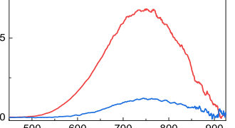
<figcaption class="paper-figure-caption"><b>Fig 1.</b> Fig. 1 | Coordination structures and optical spectra of aqueous 𝐂𝐮𝟐+ complexes.</figcaption>
</figure>
<figure class="paper-figure-card">
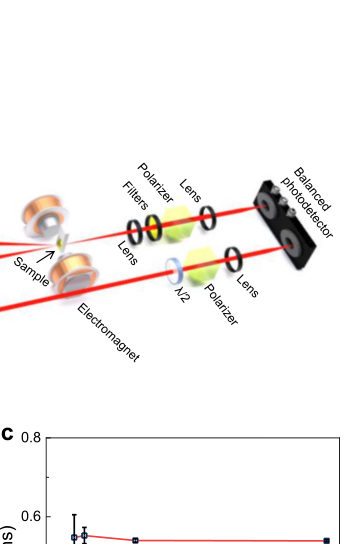
<figcaption class="paper-figure-caption"><b>Fig 2.</b> Fig. 2 | Ultrafast optical detection and concentration-dependent spin coherence</figcaption>
</figure>
<figure class="paper-figure-card">
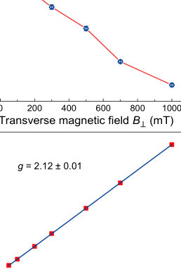
<figcaption class="paper-figure-caption"><b>Fig 3.</b> Fig. 3 | Magnetic-field dependence of all-optical spin coherence in aqueous Cu–</figcaption>
</figure>
<figure class="paper-figure-card">
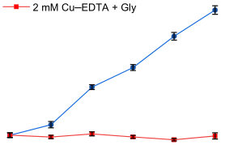
<figcaption class="paper-figure-caption"><b>Fig 4.</b> Fig. 4 | Specific prolongation of Cu–EDTA spin coherence induced by histidine. a, Time-</figcaption>
</figure>
<figure class="paper-figure-card">
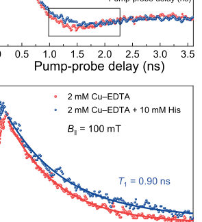
<figcaption class="paper-figure-caption"><b>Fig 5.</b> Fig. 5 | Magnetic-field-dependent spin dynamics and histidine coordination of</figcaption>
</figure>
</div>

<p><strong>Summary.</strong> The authors overcome the difficulty of optically reading electron spins in aqueous Cu(II) by using EDTA chelation to break symmetry, significantly enhancing optical signals. They then demonstrate that spin coherence time can be measured at low concentrations and, critically, that this coherence time can be selectively extended by binding to specific amino acids like histidine, opening avenues for quantum sensing.</p>
<p><strong>Why it may be interesting.</strong> This work provides a direct, experimentally validated platform for using molecular spin coherence as a highly sensitive, all-optical sensor for chemical species in aqueous media, bridging quantum optics with biochemistry.</p>
<details>
<summary>Detailed structure</summary>
<p><strong>Main problem.</strong> Optical spin readout of aqueous Cu(II) is challenging due to weak, Laporte-forbidden d-d transitions, historically requiring high concentrations.</p>
<p><strong>Main result.</strong> Symmetry-breaking chelation with EDTA enhances optical signals and enables ultrafast, low-concentration spin readout, while specific ligands like histidine can chemoselectively extend spin coherence time.</p>
<p><strong>Method.</strong> The study combines advanced spectroscopic measurements (MCD, pump-probe) with quantum chemical calculations (DFT, TD-DFT) to model electronic structure and spin dynamics.</p>
<p><strong>Model / system.</strong> The system is aqueous Cu(II) complexes, specifically comparing the aqua ion to those chelated by EDTA, and further testing selectivity using histidine and glycine ligands.</p>
<p><strong>Key observables.</strong> Spin dephasing time (T2*), magnetic circular dichroism (MCD) amplitude, and UV-vis absorption enhancement factors.</p>
<p><strong>Important parameters / regimes.</strong> Low concentrations ($\sim 100 \mu	ext{M}$), room temperature, and varying transverse magnetic fields ($B_\perp$).</p>
<p><strong>Assumptions / limitations.</strong> The initial aqua ion model is treated as time-averaged, and the spin dynamics are analyzed using pump-probe spectroscopy techniques.</p>
<p><strong>Figures summary.</strong> Figures show spectral enhancements (MCD/UV-vis) comparing complexes, time-resolved spin coherence decay curves across concentrations, and plots detailing the linear dependence of $1/T_2^*$ on $B_\perp$ and the concentration-dependent extension of $T_2^*$ upon histidine addition.</p>
<p><strong>Paper structure.</strong> The paper first establishes the spectroscopic enhancement mechanism via symmetry breaking (EDTA vs. aqua). It then uses time-resolved pump-probe spectroscopy to demonstrate low-concentration spin readout. Finally, it performs detailed analysis showing that ligand binding (His vs. Gly) modulates the spin coherence time in a chemically specific manner.</p>
</details>
<details>
<summary>Abstract</summary>
<p>Optical initialization and readout of molecular electron spins in water remains challenging for 3d transition-metal complexes. Their Laporte-forbidden d-d transitions yield weak transition dipole moments, so optical spin detection in aqueous Cu(II) previously required ~1 M concentrations. Here we overcome this constraint through symmetry-breaking chelation. Coordinating Cu(II) with EDTA imposes a non-centrosymmetric ligand field with enhanced metal-ligand covalency, relaxing Laporte restrictions and amplifying d-d transition dipole moments. This design enhances absorption and magnetic circular dichroism by 7.3- and 5.6-fold, enabling ultrafast spin readout down to 100 μM with an apparent dephasing time T2^<em>~0.54 ns. As a proof-of-concept for selective molecular-spin sensing, histidine addition extends T_2^</em> to ~0.8 ns in a concentration-dependent manner, whereas glycine produces no measurable effect. These results show that symmetry breaking provides a strategy to create molecular spin-photon interfaces, opening avenues toward all-optical, analyte-responsive quantum sensing in water.</p>
</details>
<p><sub><a href="#top">↑ back to top</a></sub></p>

<p><a id="paper-2610.24948"></a></p>
<h3 id="three-body-corrections-to-brownian-hard-sphere-viscosity"><a href="http://arxiv.org/abs/2610.24948v1">Three-body corrections to Brownian hard-sphere viscosity</a></h3>
<p><strong>Authors:</strong> Julian Olszewski, Zijian Liu, Jie Xu<br>
<strong>Type:</strong> theory · <strong>Category:</strong> statistical mechanics · <strong>PDF:</strong> <a href="https://arxiv.org/pdf/2610.24948v1">https://arxiv.org/pdf/2610.24948v1</a><br>
<strong>Analysis basis:</strong> full PDF text, analyzed in chunks
<strong>Topic relevance:</strong> <code>Keldysh / 2PI / non-Gaussian methods</code> <strong>2/5</strong> · <code>methods for driven-dissipative</code> <strong>1/5</strong></p>
<div class="figure-strip-hint">↔ Scroll figures horizontally</div>
<div class="paper-figures-scroll">
<figure class="paper-figure-card">
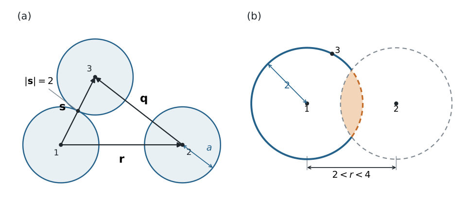
<figcaption class="paper-figure-caption"><b>Fig 1.</b> Figure 1: Three-sphere coordinates and excluded-volume geometry. All separations are measured in units of a. (a) Physical spheres of radius a, with r = x2 −x1, s = x3 −x1 and q = s −r; sphere 3 touches sphere 1 at s = 2n. (b) A planar section of the radius-2 excluded-volume balls for 2 &lt; r = |r| &lt; 4. The orange lens is their overlap. The solid blue contact arc is accessible to the third center; the dashed orange arc lies inside the second excluded-volume ball.</figcaption>
</figure>
</div>

<p><strong>Summary.</strong> This theoretical paper calculates the three-body correction to the viscosity of hard-sphere Brownian fluids. By employing advanced statistical mechanics tools, such as energy identities and variational principles, the authors derive a highly precise, rigorous bounding interval for this coefficient. This result provides a stringent benchmark against which all existing theoretical closure approximations must be tested.</p>
<p><strong>Why it may be interesting.</strong> Although focused on classical colloidal systems, the rigorous mathematical machinery—using energy functionals, variational bounds, and weak solutions—is highly relevant to developing precise theoretical descriptions of non-equilibrium dynamics in complex many-body systems.</p>
<details>
<summary>Detailed structure</summary>
<p><strong>Main problem.</strong> The paper aims to determine the precise value of the three-body correction coefficient ($c_3(0)$) to the zero-shear Brownian viscosity for hard spheres.</p>
<p><strong>Main result.</strong> The authors establish a rigorous, quantitative two-sided enclosure for $c_3(0)$ as $1.8266948 \le c_3(0) \le 1.8267157$, which excludes predictions from standard closure approximations.</p>
<p><strong>Method.</strong> The analysis employs advanced theoretical techniques, including deriving conditional energy identities, applying variational principles, and using adjoint representations to rigorously bound the three-body stress tensor.</p>
<p><strong>Model / system.</strong> The system modeled is a fluid of Brownian hard spheres, analyzed under the assumption of independent free diffusion and neglecting hydrodynamic interactions. The focus is on the non-equilibrium rheological properties.</p>
<p><strong>Key observables.</strong> The primary observable is the zero-shear Brownian viscosity coefficient, specifically the coefficient $c_3(0)$ describing the three-body contribution.</p>
<p><strong>Important parameters / regimes.</strong> The analysis is performed in the zero-shear limit ($\dot{\gamma} 	o 0$) and involves the density parameter $\phi$.</p>
<p><strong>Assumptions / limitations.</strong> Key assumptions include that the physical three-body correction matches the finite-energy weak solution and that certain remainder terms in the adjoint identity vanish.</p>
<p><strong>Figures summary.</strong> Figures and tables detail the geometry of three-sphere overlaps and present numerical results summarizing the derived lower and upper bounds for the viscosity coefficient.</p>
<p><strong>Paper structure.</strong> The paper progresses by first establishing the theoretical framework using pair-distribution equations and adjoint representations. It then contrasts the result with simpler closure theories (like Kirkwood superposition) before deriving the final, rigorous two-sided enclosure using variational and energy methods.</p>
</details>
<details>
<summary>Abstract</summary>
<p>For Brownian hard spheres without hydrodynamic interactions, we obtain a conditional enclosure between 1.8266948 and 1.8267157 for the third-order zero-shear Brownian viscosity coefficient. It applies when the physical three-body correction coincides with the finite-energy weak solution and the remote remainder in the pair adjoint identity vanishes. Kirkwood superposition gives zero because three nonzero pair contributions cancel exactly. An elementary radial identity exposes this cancellation, and a common contact-stress convention allows direct comparison of closure predictions. Although superposition solves the bulk equation, it leaves a shared-contact flux error. Correcting this error defines a unique weak response with positive Dirichlet energy. Explicit symmetric trials yield a variational lower bound and a residual upper bound using the rotational structure of shear and three-sphere geometry. Exact integration and outward interval evaluation enclose the fixed-trial functionals. Under the stated physical conditions, the resulting interval excludes all closure coefficients compared here and supplies a quantitative benchmark for dilute three-body Brownian stress.</p>
</details>
<p><sub><a href="#top">↑ back to top</a></sub></p>

<p><a id="paper-2610.26646"></a></p>
<h3 id="variational-block-correlated-coupled-cluster-monte-carlo"><a href="http://arxiv.org/abs/2610.26646v1">Variational Block Correlated Coupled Cluster Monte Carlo</a></h3>
<p><strong>Authors:</strong> Hunter Brodie, Alexander Shilcusky, Adrian E. Feiguin<br>
<strong>Type:</strong> theory · <strong>Category:</strong> strongly correlated electrons · <strong>PDF:</strong> <a href="https://arxiv.org/pdf/2610.26646v1">https://arxiv.org/pdf/2610.26646v1</a><br>
<strong>Analysis basis:</strong> full PDF text, analyzed in chunks
<strong>Topic relevance:</strong> <code>analog quantum simulation</code> <strong>2/5</strong> · <code>methods for driven-dissipative</code> <strong>1/5</strong></p>
<div class="figure-strip-hint">↔ Scroll figures horizontally</div>
<div class="paper-figures-scroll">
<figure class="paper-figure-card">
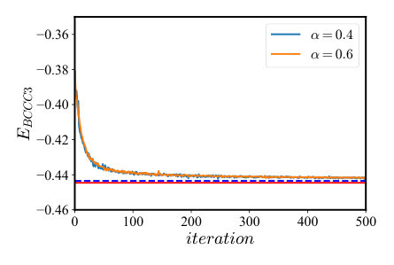
<figcaption class="paper-figure-caption"><b>Fig 1.</b> FIG. 1. Energy convergence for a 1D chain of length L = 24 and block size N0 = 4 (6 blocks) with</figcaption>
</figure>
<figure class="paper-figure-card">
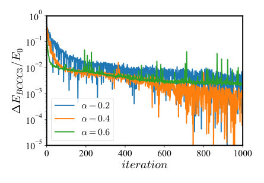
<figcaption class="paper-figure-caption"><b>Fig 2.</b> FIG. 2. Relative error in a log scale for a 1D chain of length L = 24 and block size N0 = 6 (4</figcaption>
</figure>
<figure class="paper-figure-card">
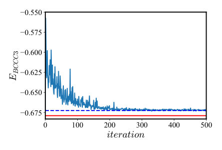
<figcaption class="paper-figure-caption"><b>Fig 3.</b> FIG. 3. Energy convergence for a BCCC3 simulation of a 6 × 6 square lattice using square 2 × 2</figcaption>
</figure>
</div>

<p><strong>Summary.</strong> This paper introduces a Variational Block Correlated Coupled Cluster Monte Carlo method to tackle the complex many-body problem in quantum magnets. By combining CC theory with advanced Monte Carlo sampling and Young tableaux encoding, it achieves a scalable and systematically improvable way to calculate ground state energies. The method is successfully applied to the Heisenberg model in 1D and 2D, demonstrating its potential for correlated materials research.</p>
<p><strong>Why it may be interesting.</strong> While focused on spin models, the combination of CC theory with advanced Monte Carlo sampling and variational optimization techniques represents a powerful, generalizable numerical tool for tackling strongly correlated quantum Hamiltonians, which is relevant to many AMO systems.</p>
<details>
<summary>Detailed structure</summary>
<p><strong>Main problem.</strong> The paper addresses the challenge of solving the many-body problem in correlated quantum systems, which involves exponentially growing configuration spaces.</p>
<p><strong>Main result.</strong> The Variational Block Correlated Coupled Cluster (BCCC) Monte Carlo method provides a systematically improvable and scalable framework for calculating ground state energies with competitive accuracy.</p>
<p><strong>Method.</strong> It combines Coupled Cluster theory (using an exponential ansatz) with Variational Monte Carlo sampling, employing a Young tableaux representation to manage computational complexity.</p>
<p><strong>Model / system.</strong> The method is tested on the antiferromagnetic Heisenberg model, specifically using the $    ext{H}_{    ext{XXZ}}$ Hamiltonian, applied to both one-dimensional chains and two-dimensional lattices.</p>
<p><strong>Key observables.</strong> The primary observable is the ground state energy ($E$), with diagnostics including correlation structure and convergence behavior.</p>
<p><strong>Important parameters / regimes.</strong> Key parameters include the Ising anisotropy ($\Delta$), the block size ($N_0$), and the variational hyperparameter $\alpha$ used in importance sampling.</p>
<p><strong>Assumptions / limitations.</strong> The approach relies on the variational principle to ensure the calculated energy is an upper bound, and it assumes that truncating the CC expansion (e.g., at $  ext{BCCC3}$) is sufficient, though long-range correlations remain a limitation.</p>
<p><strong>Figures summary.</strong> Figures illustrate energy convergence (e.g., $ ext{BCCC3}$ energy vs. iteration) and show comparisons of relative errors across different lattice geometries and truncation schemes.</p>
<p><strong>Paper structure.</strong> The paper introduces the variational CC framework, details the Young tableaux representation and the importance sampling technique, and then applies this machinery to calculate ground state energies for the Heisenberg model in 1D and 2D, comparing results against known exact limits.</p>
</details>
<details>
<summary>Abstract</summary>
<p>Motivated by the recent success of quantum neural states, we present a variational implementation of the coupled cluster method suitable for quantum Monte Carlo simulations. We introduce a Young tableaux representation of the wave-function coefficients and their derivatives that substantially reduces the computational complexity of the variational optimization. While the algorithm is generic, we illustrate its implementation with an application to the Heisenberg model in one and two dimensions, using the block correlated coupled cluster ansatz (BCCC) with doubles and triples. Convergence is greatly improved by means of importance sampling based on a fictitious temperature. The resulting approach achieves competitive accuracy while providing a scalable framework for variational coupled-cluster calculations.</p>
</details>
<p><sub><a href="#top">↑ back to top</a></sub></p>

<p><a id="paper-2610.25657"></a></p>
<h3 id="quantum-state-search-with-classical-interactive-advice"><a href="http://arxiv.org/abs/2610.25657v1">Quantum State Search with Classical Interactive Advice</a></h3>
<p><strong>Authors:</strong> Mohammed Barhoush<br>
<strong>Type:</strong> theory · <strong>Category:</strong> quantum information and computing · <strong>PDF:</strong> <a href="https://arxiv.org/pdf/2610.25657v1">https://arxiv.org/pdf/2610.25657v1</a><br>
<strong>Analysis basis:</strong> full PDF text, analyzed in chunks
<strong>Topic relevance:</strong> <code>quantum measurements</code> <strong>2/5</strong></p>
<div class="figure-strip-hint">↔ Scroll figures horizontally</div>
<div class="paper-figures-scroll">
<figure class="paper-figure-card">
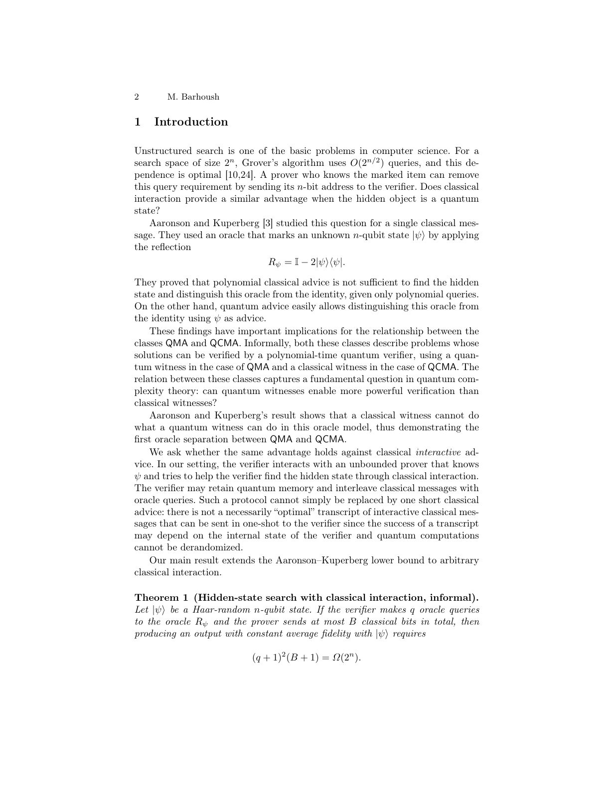
<figcaption class="paper-figure-caption"><b>Fig 1.</b> Low-resolution page preview, page 2</figcaption>
</figure>
<figure class="paper-figure-card">
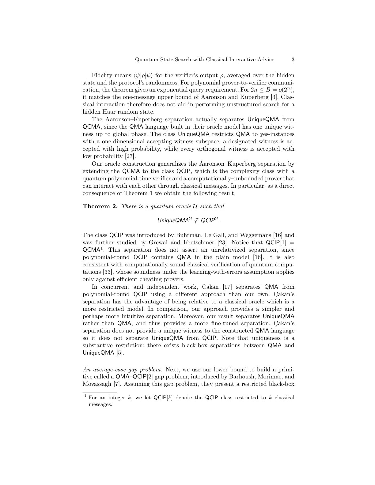
<figcaption class="paper-figure-caption"><b>Fig 2.</b> Low-resolution page preview, page 3</figcaption>
</figure>
<figure class="paper-figure-card">

<figcaption class="paper-figure-caption"><b>Fig 3.</b> Low-resolution page preview, page 4</figcaption>
</figure>
<figure class="paper-figure-card">

<figcaption class="paper-figure-caption"><b>Fig 4.</b> Low-resolution page preview, page 5</figcaption>
</figure>
<figure class="paper-figure-card">

<figcaption class="paper-figure-caption"><b>Fig 5.</b> Low-resolution page preview, page 6</figcaption>
</figure>
</div>

<p><strong>Summary.</strong> This paper analyzes the quantum state search problem to determine if classical interaction between a prover and verifier helps find a hidden quantum state. It proves a strong lower bound on the required resources, showing that classical interaction does not provide an advantage over single-message proofs. This leads to a formal separation between the quantum complexity classes UniqueQMA and QCIP.</p>
<p><strong>Why it may be interesting.</strong> This work provides fundamental complexity separations that constrain the power of classical communication in quantum verification protocols, which has implications for quantum cryptography and computational hardness.</p>
<details>
<summary>Detailed structure</summary>
<p><strong>Main problem.</strong> The paper investigates the computational advantage gained by allowing an unbounded prover to interact classically with a quantum verifier during the process of finding a hidden quantum state.</p>
<p><strong>Main result.</strong> It establishes a lower bound showing that achieving constant average fidelity requires a super-polynomial scaling in the number of queries and communication bits, leading to a separation between the complexity classes UniqueQMA and QCIP.</p>
<p><strong>Method.</strong> The proof extends the Aaronson-Kuperberg lower bound by analyzing the information gain derived from the classical interaction transcript, relating it to the dimension of the Hilbert space.</p>
<p><strong>Model / system.</strong> The model is the quantum state search problem involving a hidden Haar-random n-qubit state $|\psi
angle$, verified using a reflection oracle $R_\psi = I - 2|\psi
angle\langle\psi|$.</p>
<p><strong>Key observables.</strong> Average fidelity, number of verifier queries ($q$), and total prover-to-verifier communication bits ($B$).</p>
<p><strong>Important parameters / regimes.</strong> The lower bound scales as $\Omega(2^n)$, where $n$ is the number of qubits.</p>
<p><strong>Assumptions / limitations.</strong> The analysis assumes the verifier has access to a reflection oracle and that the prover can provide optimal, deterministic responses for any given transcript.</p>
<p><strong>Paper structure.</strong> The paper develops the lower bound by analyzing the information gain from classical interaction, extends this to prove a separation between UniqueQMA and QCIP, and further constructs a gap problem for QMA-QCIP[2].</p>
</details>
<details>
<summary>Abstract</summary>
<p>We study whether a quantum verifier can find a hidden quantum state by exchanging classical messages with an unbounded prover who knows the state. The verifier has access to a reflection oracle about the target. For a Haar-random $n$-qubit target, we prove that achieving constant average fidelity with the target requires $(q+1)^2(B+1)=Ω(2^n)$, where $q$ is the number of verifier queries and $B$ is the total prover-to-verifier communication. The bound allows arbitrary classical interaction and unrestricted computation between queries. Our proof extends the lower bound of Aaronson and Kuperberg from a single classical proof to an arbitrary classical interaction.   As a result, we obtain a quantum-oracle separation of UniqueQMA from QCIP with polynomially many classical messages. In particular, we give a unitary oracle $\mathcal{U}$ such that there exists a language $L\in\mathrm{UniqueQMA}^{\mathcal{U}}$ but $L\notin\mathrm{QCIP}^{\mathcal{U}}$.   We further give an oracle construction for a notion known as QMA-QCIP[2] gap problem. This gives average case hardness for a QMA language under classical access to a QCIP[2] decision oracle and is used in establishing negative results on witness encryption and quantum indistinguishability obfuscation.</p>
</details>
<p><sub><a href="#top">↑ back to top</a></sub></p>

<p><a id="paper-2610.25518"></a></p>
<h3 id="randomness-certification-from-statistically-hiding-commitments"><a href="http://arxiv.org/abs/2610.25518v1">Randomness Certification from Statistically Hiding Commitments</a></h3>
<p><strong>Authors:</strong> Ilya Merkulov, Rotem Arnon<br>
<strong>Type:</strong> theory · <strong>Category:</strong> quantum information and computing · <strong>PDF:</strong> <a href="https://arxiv.org/pdf/2610.25518v1">https://arxiv.org/pdf/2610.25518v1</a><br>
<strong>Analysis basis:</strong> full PDF text, analyzed in chunks
<strong>Topic relevance:</strong> <code>quantum measurements</code> <strong>2/5</strong></p>
<div class="figure-strip-hint">↔ Scroll figures horizontally</div>
<div class="paper-figures-scroll">
<figure class="paper-figure-card">

<figcaption class="paper-figure-caption"><b>Fig 1.</b> Figure 1: The hidden virtual input is the computational analogue of a Bell measurement setting. Classical hiding excludes efficient classical strategies and yields a PoQ, whereas quantum hiding also protects against the prover’s residual quantum state and enables randomness certification. Our main technical contribution is to establish this stronger guarantee for a commitment-based proof-of-qubit protocol.</figcaption>
</figure>
</div>

<p><strong>Summary.</strong> This paper develops a protocol to certify genuine randomness from an untrusted quantum device by leveraging cryptographic assumptions. It shows that this requires a stronger security notion, 'quantum virtual-input hiding,' compared to what is needed just to prove the device is quantum. The result provides a path to randomness certification using post-quantum commitment schemes.</p>
<p><strong>Why it may be interesting.</strong> While focused on cryptography, the core concept of certifying genuine randomness from physical processes (like quantum measurements) is fundamental to quantum information theory and device characterization, which has implications for quantum hardware validation.</p>
<details>
<summary>Detailed structure</summary>
<p><strong>Main problem.</strong> The paper addresses randomness certification: guaranteeing that the output of an untrusted quantum device is genuinely random and unpredictable even when the adversary possesses quantum side information.</p>
<p><strong>Main result.</strong> The authors establish that randomness certification can be achieved using post-quantum statistically hiding bit commitments, requiring only statistical hiding and ordinary computational binding against quantum polynomial-time senders.</p>
<p><strong>Method.</strong> The work builds upon the framework of Computational Bell Inequalities, distinguishing between classical and quantum virtual-input hiding to upgrade a proof-of-quantumness protocol to a randomness-certification protocol.</p>
<p><strong>Model / system.</strong> The setting involves a classical verifier interacting with a single, untrusted quantum device. The analysis uses cryptographic primitives like commitment schemes and draws analogies to physical Bell tests via computational analogues.</p>
<p><strong>Key observables.</strong> Conditional von Neumann entropy, Bell correlation (CHSH tuple), and the success of the commitment opening procedure.</p>
<p><strong>Important parameters / regimes.</strong> The security relies on the existence of post-quantum statistically hiding bit commitments and the computational power of quantum polynomial-time (QPT) senders.</p>
<p><strong>Assumptions / limitations.</strong> The protocol assumes the existence of post-quantum statistically hiding bit commitments satisfying computational binding against QPT senders, which is shown to be weaker than stronger notions like sum-binding.</p>
<p><strong>Figures summary.</strong> Figure 1 illustrates the computational analogue of a Bell measurement setting, showing that classical hiding suffices for Proofs of Quantumness (PoQ), while quantum hiding is necessary for randomness certification.</p>
<p><strong>Paper structure.</strong> The paper progresses by first establishing the necessity of quantum virtual-input hiding over classical hiding, then providing the main technical contribution by proving this hiding property for a commitment-based protocol, and finally instantiating the construction using specific functions (TCFs) or models (QROM).</p>
</details>
<details>
<summary>Abstract</summary>
<p>Randomness certification aims to guarantee that the output of an untrusted quantum device contains genuine randomness that remains unpredictable even given quantum side information held by an adversary. For a classical verifier interacting with a single quantum device, such a guarantee cannot rely on the physical separation underlying standard Bell tests and must instead follow from computational restrictions on the prover. Building on the framework of Computational Bell Inequalities, we distinguish classical and quantum virtual-input hiding, showing that the former suffices for proofs of quantumness, whereas the latter enables randomness certification against quantum side information.   Our main technical contribution is to establish quantum virtual-input hiding for a commitment-based protocol derived from the proof of quantumness from one-way-functions by Morimae and Yamakawa. We show that statistical hiding together with ordinary computational binding against quantum polynomial-time senders suffices, without requiring stronger quantum binding notions such as sum-binding or collapse-binding. This yields a randomness-certification protocol from post-quantum statistically hiding bit commitments. In particular, existing constructions of such commitments from post-quantum one-way permutations imply that post-quantum one-way permutations suffice for randomness certification.   We further instantiate our construction using quantum-secure trapdoor claw-free functions, obtaining an efficient classical verifier, and in the quantum random oracle model, obtaining randomness certification without additional computational assumptions but with an inefficient verifier. These instantiations separate the cryptographic properties sufficient for randomness certification from the additional structure required for efficient verification within our commitment-based framework.</p>
</details>
<p><sub><a href="#top">↑ back to top</a></sub></p>

<p><a id="paper-2610.25439"></a></p>
<h3 id="the-anyon-atlas"><a href="http://arxiv.org/abs/2610.25439v1">The Anyon Atlas</a></h3>
<p><strong>Authors:</strong> Jonah Berean-Dutcher, Clay Cordova, Julio Parra-Martinez, Richard Tuddenham<br>
<strong>Type:</strong> theory · <strong>Category:</strong> other · <strong>PDF:</strong> <a href="https://arxiv.org/pdf/2610.25439v1">https://arxiv.org/pdf/2610.25439v1</a><br>
<strong>Analysis basis:</strong> full PDF text, analyzed in chunks
<strong>Topic relevance:</strong> <code>analog quantum simulation</code> <strong>2/5</strong></p>
<div class="figure-strip-hint">↔ Scroll figures horizontally</div>
<div class="paper-figures-scroll">
<figure class="paper-figure-card">

<figcaption class="paper-figure-caption"><b>Fig 1.</b> Figure 1: Number of modular and supermodular data at each rank, with the total shown above the bars. The light bars count, respectively, all data and the subset which is pseudo-unitary, meaning that its quantum dimensions are positive and hence it could possibly correspond to a full unitary modular tensor category. The dark inner bars count the subset of the data which are prime, i.e. do not split into a product of lower-rank examples. Finally, the green bars count completely anisotropic data corresponding to terminal elements in a Witt class that do not admit any possible anyon condensation.</figcaption>
</figure>
<figure class="paper-figure-card">

<figcaption class="paper-figure-caption"><b>Fig 2.</b> Figure 2: The Witt group is composed of equivalence classes of modular categories related by conden- sation and gauging, or, equivalently, 1- and 0-form gauging. Condensation between two phases, and its effect on simple lines, is illustrated schematically on the left. Two phases related by condensation admit a gapped domain wall interface. Anyonic excitations in one phase may be deconfined, surviving as freely propagating excitations in the condensed phase; confined, unable to propagate into the con- densed phase but surviving as excitations localized to the interface; or condensed, becoming identified with the vacuum in the condensed phase. In the database, we represent these condensation...</figcaption>
</figure>
<figure class="paper-figure-card">

<figcaption class="paper-figure-caption"><b>Fig 3.</b> Figure 3: Counts of pseudo-unitary modular (left) and supermodular (right) data identified as Chern– Simons theories based on possibly disconnected and non-simply connected gauge groups, or proven not to be. Unresolved cases may be invertible gaugings of Chern–Simons theories at ranks greater than 2500.</figcaption>
</figure>
<figure class="paper-figure-card">

<figcaption class="paper-figure-caption"><b>Fig 4.</b> Figure 4: AnyonAtlas.org includes a calculator for the modular data of any Chern–Simons theory with a compact, connected gauge group, including spin theories. That is, it covers invertible anyon condensations of U(1) and affine Lie modular categories. We compute the modular data of these condensates by the procedure developed in [59].</figcaption>
</figure>
<figure class="paper-figure-card">

<figcaption class="paper-figure-caption"><b>Fig 5.</b> Figure 5: Flowchart of the modular and supermodular data classification algorithm.</figcaption>
</figure>
</div>

<p><strong>Summary.</strong> This paper classifies topological quantum field theories in 2+1 dimensions by analyzing their underlying mathematical structure, the modular tensor category. The authors develop a computational method to catalog these theories, finding numerous examples that cannot be derived from conventional Chern-Simons gauge theories. This expands our understanding of topological order beyond established gauge theory paradigms.</p>
<p><strong>Why it may be interesting.</strong> This work provides a deep mathematical framework for classifying exotic topological phases of matter, which is crucial for understanding fractional quantum Hall states and topological quantum computation beyond standard gauge theory models.</p>
<details>
<summary>Detailed structure</summary>
<p><strong>Main problem.</strong> The goal is to classify all possible Topological Quantum Field Theories (TQFTs) in 2+1 dimensions and map the relationships between them, creating a comprehensive 'Anyon Atlas.'</p>
<p><strong>Main result.</strong> The authors classify up to 22 bosonic and 26 fermionic TQFTs using modular/supermodular tensor categories, identifying examples that fundamentally go beyond descriptions based on Chern-Simons gauge theories.</p>
<p><strong>Method.</strong> Classification relies on analyzing the modular data (S, T) which defines a congruence representation of SL(2, Z), using a numerical optimization algorithm scaled to high ranks.</p>
<p><strong>Model / system.</strong> The theory concerns TQFTs describing anyons (quasiparticles with non-standard statistics) in 2+1 dimensions, mathematically characterized by unitary modular or supermodular tensor categories.</p>
<p><strong>Key observables.</strong> Modular data (S, T), anyon types (up to 22 bosonic/26 fermionic), and satisfaction of the pentagon and hexagon equations.</p>
<p><strong>Important parameters / regimes.</strong> The rank of the modular/supermodular category (up to 22 or 26).</p>
<p><strong>Assumptions / limitations.</strong> The classification is computationally intensive, and the authors admit that the current method does not provide an exact certificate that <em>every</em> possible set of modular data has been found.</p>
<p><strong>Figures summary.</strong> Figure 1 shows the counts of identified modular and supermodular data at various ranks, categorized by pseudo-unitary, prime, and anisotropic types.</p>
<p><strong>Paper structure.</strong> The paper systematically classifies modular data using numerical methods, analyzes the relationship between these data and Chern-Simons theories, and presents the findings in the online Anyon Atlas.</p>
</details>
<details>
<summary>Abstract</summary>
<p>We classify possible topological quantum field theories in 2+1 dimensions with up to 22 anyons in the bosonic case and up to 26 in the fermionic case, through the modular data of modular and supermodular tensor categories. We construct such data via congruence representations of $\mathrm{SL}(2,\mathbb{Z})$ using a numerical optimization algorithm that scales to high rank. We chart the relations between the resulting theories, including anyon condensations and Chern-Simons realizations. We find examples of modular data that do not appear to arise from any Chern-Simons theory by any sequence of condensations of anyons or gaugings of ordinary global symmetries. These examples give qualitatively new topological quantum field theories, which go beyond any notion of gauge theory. For examples in this class with 11 and 12 anyon types, we solve the pentagon and hexagon equations explicitly, showing that these modular data are realized by full unitary topological quantum field theories. We also introduce https://www.AnyonAtlas.org, an online resource for exploring the data.</p>
</details>
<p><sub><a href="#top">↑ back to top</a></sub></p>

<p><a id="paper-2610.25953"></a></p>
<h3 id="chirality-destroys-oriented-active-solids"><a href="http://arxiv.org/abs/2610.25953v1">Chirality destroys oriented active solids</a></h3>
<p><strong>Authors:</strong> S. J. Kole, Gareth P. Alexander, Ananyo Maitra, Sriram Ramaswamy<br>
<strong>Type:</strong> theory · <strong>Category:</strong> statistical mechanics · <strong>PDF:</strong> <a href="https://arxiv.org/pdf/2610.25953v1">https://arxiv.org/pdf/2610.25953v1</a><br>
<strong>Analysis basis:</strong> full PDF text, analyzed in chunks
<strong>Topic relevance:</strong> <code>Keldysh / 2PI / non-Gaussian methods</code> <strong>1/5</strong> · <code>analog quantum simulation</code> <strong>1/5</strong> · <code>correlated / nonlocal dissipation</code> <strong>1/5</strong> · <code>driven-dissipative phase transition</code> <strong>1/5</strong> · <code>methods for driven-dissipative</code> <strong>1/5</strong> · <code>non-equilibrium universality</code> <strong>1/5</strong></p>
<div class="figure-strip-hint">↔ Scroll figures horizontally</div>
<div class="paper-figures-scroll">
<figure class="paper-figure-card">

<figcaption class="paper-figure-caption"><b>Fig 1.</b> FIG. 1. Schematic illustration of the types of oriented solids we consider and the generic helical instability in chiral ori- ented active solids. Top row (left to right): polar solid in a surrounding network; isotropic solid in an polar network; ori- ented elastomer. Bottom row: Chiral instability. Dark grey arrows indicate the polar axis and we have made the image partly transparent and highlighted a material line parallel to the polar direction to aid visualisation.</figcaption>
</figure>
</div>

<p><strong>Summary.</strong> This theoretical work develops a hydrodynamic theory to examine how chirality and active forces destabilize solid materials. It demonstrates that while these forces generally cause instability, the enhanced symmetry of polar elastomers allows them to remain stable. The findings are highly relevant for understanding biological tissues and active matter systems.</p>
<p><strong>Why it may be interesting.</strong> While focused on condensed matter mechanics, the study of active instabilities and symmetry breaking in non-equilibrium systems has parallels with understanding dissipation and steady states in complex quantum or many-body systems.</p>
<details>
<summary>Detailed structure</summary>
<p><strong>Main problem.</strong> The paper investigates how chiral and active force densities affect the stability of three-dimensional uniaxial solids.</p>
<p><strong>Main result.</strong> Active chiral force densities generically destabilize the solid state, but this instability is eliminated in higher-symmetry materials like polar elastomers.</p>
<p><strong>Method.</strong> The authors construct and analyze a hydrodynamic theory, using linearized equations and wavevector perturbations to study the dynamics.</p>
<p><strong>Model / system.</strong> The study models 3D uniaxial solids and polar elastomers using continuum mechanics, incorporating free energy functionals and active force tensors.</p>
<p><strong>Key observables.</strong> Instability growth rate, helical transverse displacement field, and the comparison of odd elastic force densities.</p>
<p><strong>Important parameters / regimes.</strong> Chiral and active force densities, wavevector magnitude (q), and elastic moduli ($\lambda, \mu, r, w, t, s$).</p>
<p><strong>Assumptions / limitations.</strong> The analysis assumes a vacancy-free solid and compares general uniaxial solids to the higher symmetry of elastomers.</p>
<p><strong>Figures summary.</strong> Figure 1 schematically illustrates the considered oriented solids and the generic helical instability.</p>
<p><strong>Paper structure.</strong> The paper develops a hydrodynamic theory, analyzes the instability in general uniaxial solids, and then contrasts these findings with the stability observed in higher-symmetry polar elastomers.</p>
</details>
<details>
<summary>Abstract</summary>
<p>We construct a hydrodynamic theory of the effect of chiral and active force densities on three-dimensional uniaxial solids. We show that in a fixed background medium active chiral force densities---that arise at lower order in gradients than odd elasticity---generically destabilise the solid state. We further show this active instability also affects isotropic chiral solids in an anisotropic medium, a situation that is relevant for cell clusters moving through the extracellular matrix. Interestingly, the instability is eliminated in a higher-symmetry solid, known as the polar elastomer; indeed, we show that chirality does not affect the leading-order mechanics of such materials. We further demonstrate that momentum-conserving polar active solids have two chiral odd elasticities in contrast to the one discussed for two-dimensional solids. However, we again find that the higher symmetry of polar elastomers eliminates one of these with the remaining one being equivalent to the two-dimensional odd elastic force density. Our results should apply to numerous biological and condensed matter systems.</p>
</details>
<p><sub><a href="#top">↑ back to top</a></sub></p>

<p><a id="paper-2610.25280"></a></p>
<h3 id="de-finetti-structures-in-networks-of-quantum-systems"><a href="http://arxiv.org/abs/2610.25280v1">De Finetti Structures in Networks of Quantum Systems</a></h3>
<p><strong>Authors:</strong> Gavin Hull, Marco Merkli<br>
<strong>Type:</strong> theory · <strong>Category:</strong> quantum information and computing · <strong>PDF:</strong> <a href="https://arxiv.org/pdf/2610.25280v1">https://arxiv.org/pdf/2610.25280v1</a><br>
<strong>Analysis basis:</strong> full PDF text, analyzed in chunks
<strong>Topic relevance:</strong> <code>Keldysh / 2PI / non-Gaussian methods</code> <strong>1/5</strong> · <code>analog quantum simulation</code> <strong>1/5</strong> · <code>correlated / nonlocal dissipation</code> <strong>1/5</strong> · <code>driven-dissipative phase transition</code> <strong>1/5</strong> · <code>methods for driven-dissipative</code> <strong>1/5</strong> · <code>non-equilibrium universality</code> <strong>1/5</strong></p>
<div class="figure-strip-hint">↔ Scroll figures horizontally</div>
<div class="paper-figures-scroll">
<figure class="paper-figure-card">

<figcaption class="paper-figure-caption"><b>Fig 1.</b> Figure 1. A network of quantum systems. Each of the N vertices of a graph hosts an identical quantum system (white discs). Every edge in the graph represents the interaction between the quantum systems located at the corresponding vertices. The interaction between vertices i, j is of the form AiAj, where Ai is the single-vertex operator A translated to act on the vertex i. K among the N vertices are singled out to form an open system S which is connected to a reservoir RN consisting of the remaining N −K vertices. As the graph size N is increased, existing edges remain unchanged, while new ones may be added. We analyze the state of the fixed system S as N →∞.</figcaption>
</figure>
<figure class="paper-figure-card">

<figcaption class="paper-figure-caption"><b>Fig 2.</b> Figure 2. Effective connectivity along a graph sequence. S consisting of K = 3 vertices connected to an R of a growing number N −K = 2, 4, 6 of vertices. L, (2.19) consists of two elements B1, B2 (each one of them is one of the Ai). The system is fixed while reservoir incidence classes accumulate. As the graph grows, the incidence numbers ν1, ν2 associated to B1, B2, (3.2) are growing in the first row, while one of them remains bounded (equal to one) in the bottom row. Accordingly, the effective connection number εK(N), (3.3) grows in N or stays bounded. Growing εK(N) →∞gives a well-connected system S.</figcaption>
</figure>
<figure class="paper-figure-card">

<figcaption class="paper-figure-caption"><b>Fig 3.</b> Figure 3. Different resolutions of the system by the reservoir. Collective resolution: each vertex in R connected to S is linked to every vertex in S; the set of boundary operators L, (2.19) is a singleton; the CPTP map P, (3.12) is an integral over a ζ-dimensional torus with factorized, symmetric integrand. Coarse resolution: S is subdivided into several subsystems (two in the example depicted); each vertex in R which connects to S is linked to all the vertices of exactly one subsystem; each subsystem contributes to L with one operator; P is the product of actions of the collective type on each subsystem. Local resolution: each vertex in R which is connected to S connects to exactly one...</figcaption>
</figure>
<figure class="paper-figure-card">

<figcaption class="paper-figure-caption"><b>Fig 4.</b> Figure 4. Area Law in quantum networks. The boundary ∂S of S, (2.15) is induced by the graph: it is the collection of vertices in S which are connected to R. Two representations in which the network is viewed as being 2- and 3-dimensional. The von Neumann entropy of the state of S is called the entanglement entropy when the total network state is pure. The entanglement entropy may grow with S. We show that as N →∞, the system entanglement entropy is bounded above by |∂S|, the area of the boundary of S (not its volume).</figcaption>
</figure>
</div>

<p><strong>Summary.</strong> This work extends the de Finetti theorem to quantum networks, showing that the reduced state of a subsystem converges to a specific convex combination structure even when the system interactions are non-exchangeable. By analyzing entanglement entropy and information measures, the authors provide quantitative convergence rates for these quantities in the thermodynamic limit. This is crucial for understanding correlations in large, complex quantum many-body systems.</p>
<p><strong>Why it may be interesting.</strong> The generalization of the de Finetti theorem to non-exchangeable quantum networks provides powerful tools for understanding entanglement and correlations in complex, realistic quantum systems beyond simple mean-field approximations.</p>
<details>
<summary>Detailed structure</summary>
<p><strong>Main problem.</strong> The paper determines the structure of the reduced state of a finite subsystem embedded in a large quantum network as the total system size approaches infinity.</p>
<p><strong>Main result.</strong> The reduced state converges to a de Finetti representation, extending this structure to quantum networks that are inherently non-exchangeable.</p>
<p><strong>Method.</strong> The analysis involves taking the partial trace over the reservoir and analyzing the convergence of quantum information measures using various inequalities and scaling limits.</p>
<p><strong>Model / system.</strong> The model consists of N identical quantum systems at graph vertices interacting via pairwise edge couplings, with a subsystem S (size K) coupled to a reservoir R (size N-K).</p>
<p><strong>Key observables.</strong> Reduced state ($
ho^{(K)}_N$), entanglement entropy, von Neumann entropy, mutual information, and concurrence.</p>
<p><strong>Important parameters / regimes.</strong> The system size limit ($N 	o \infty$), the connectivity structure (e.g., Erdős–Rényi random graphs), and the scaling of the S-R interaction (mean-field vs. fluctuation).</p>
<p><strong>Assumptions / limitations.</strong> Generic connectivity assumptions between S and R, and the system being in a 'well-connected' regime for convergence to hold.</p>
<p><strong>Figures summary.</strong> Figure 1 illustrates the network structure (S coupled to R). Figure 2 illustrates the concept of effective connectivity ($\epsilon_K(N)$) using incidence numbers to define 'well-connectedness'.</p>
<p><strong>Paper structure.</strong> The paper first establishes the convergence to the de Finetti structure for non-exchangeable quantum networks. It then analyzes the convergence of specific information-theoretic quantities (entropy, mutual information) in the large N limit, providing explicit convergence rates and bounds.</p>
</details>
<details>
<summary>Abstract</summary>
<p>Consider $N$ identical quantum systems at the vertices of a graph, interacting via pairwise edge couplings. We designate $K$ vertices as a system of interest $\mathrm S$ and the remaining $N-K$ as a reservoir $\mathrm R$. Under generic connectivity assumptions between $\mathrm S$ and $\mathrm R$, we show that for $N\to\infty$, the reduced state of $\mathrm S$ converges to a convex combination of symmetric product states of $K$ single-vertex density matrices -- called a de Finetti representation. Unlike in standard derivations for symmetric (exchangeable) systems, we establish de Finetti representations for quantum networks, which are inherently non-exchangeable. We construct the representations explicitly and quantify the convergence rate. We show that Erdős--Rényi random graphs exhibit the de Finetti structure: as the reservoir grows, the reduced state of any fixed finite subgraph converges almost surely to an explicit deterministic product state. As applications, we establish a general area law for the entanglement entropy of $\mathrm S$, analyze mean-field and fluctuation scalings of the $\mathrm S$-$\mathrm R$ interaction, and illustrate our results on qubit networks. We also derive quantitative convergence estimates for information-theoretic quantities, including von Neumann entropy, mutual information, and entanglement within $\mathrm S$ and between $\mathrm S$ and $\mathrm R$.</p>
</details>
<p><sub><a href="#top">↑ back to top</a></sub></p>

<p><a id="paper-2610.25945"></a></p>
<h3 id="effect-of-chirality-on-active-elastomers-and-solids-in-three-dimensions"><a href="http://arxiv.org/abs/2610.25945v1">Effect of chirality on active elastomers and solids in three dimensions</a></h3>
<p><strong>Authors:</strong> S. J. Kole, Gareth P. Alexander, Ananyo Maitra, Sriram Ramaswamy<br>
<strong>Type:</strong> theory · <strong>Category:</strong> statistical mechanics · <strong>PDF:</strong> <a href="https://arxiv.org/pdf/2610.25945v1">https://arxiv.org/pdf/2610.25945v1</a><br>
<strong>Analysis basis:</strong> full PDF text, analyzed in chunks
<strong>Topic relevance:</strong> <code>Keldysh / 2PI / non-Gaussian methods</code> <strong>1/5</strong> · <code>analog quantum simulation</code> <strong>1/5</strong> · <code>correlated / nonlocal dissipation</code> <strong>1/5</strong> · <code>driven-dissipative phase transition</code> <strong>1/5</strong> · <code>methods for driven-dissipative</code> <strong>1/5</strong> · <code>non-equilibrium universality</code> <strong>1/5</strong></p>
<div class="figure-strip-hint">↔ Scroll figures horizontally</div>
<div class="paper-figures-scroll">
<figure class="paper-figure-card">

<figcaption class="paper-figure-caption"><b>Fig 1.</b> FIG. 1. Schematic illustration of oriented solids (blue) moving through an isotropic external medium, visualised as a light grey mesh. (a) Polar solid with both p ̸= 0 and Q ̸= 0. (b) Uniaxial solid with p = 0 but Q ̸= 0.</figcaption>
</figure>
<figure class="paper-figure-card">

<figcaption class="paper-figure-caption"><b>Fig 2.</b> FIG. 2. Schematic illustration of a uniaxial elastomer in an isotropic external medium. The left-hand panel shows the isotropic state (p = Q = 0) and the right-hand panel a spon- taneously ordered state, as in Eq. (IV.A.2). The elastomer is shown in blue with a side-chain polymer architecture; the external medium is visualised as a light grey mesh. Note that orientational ordering is associated with a deformation of the solid.</figcaption>
</figure>
<figure class="paper-figure-card">

<figcaption class="paper-figure-caption"><b>Fig 3.</b> FIG. 3. Illustration of the soft mode of elastomers. The isotropic reference state is indicated as a light grey cube and the uniaxial state as an orange parallelepiped with the direction of polar alignment indicated by a red arrow. These are all equivalent ground states of the elastomer, Eq. (IV.A.2), but corresponding to different elastic strains of the isotropic state. Importantly, the intermediate states cannot be obtained via a rigid rotation of the leftmost parallelepiped. This is the key distinction between the symmetry properties of uniaxial elastomers and solids: the latter are invariant only under rigid rotations of the parallelepiped.</figcaption>
</figure>
<figure class="paper-figure-card">

<figcaption class="paper-figure-caption"><b>Fig 4.</b> FIG. 4. Linear instability of chiral active solids. The solid is shown as a lattice of spheres with the unperturbed state on the left and the linearly unstable displacement mode associated to (VI.B.5) on the right.</figcaption>
</figure>
<figure class="paper-figure-card">

<figcaption class="paper-figure-caption"><b>Fig 5.</b> FIG. 5. Schematic of an active chiral solid (blue) in an ex- ternal medium with cubic anisotropy, indicated by the grey mesh. A rotation of the solid about a general axis, shown in red, leads to a destabilising chiral active force density as described in the text.</figcaption>
</figure>
</div>

<p><strong>Summary.</strong> This theoretical work develops the hydrodynamic theory for active elastomers and solids, focusing on the role of chirality in 3D. It shows that while high symmetry constrains the effects of chirality in elastomers, breaking this symmetry leads to a generic instability in the resulting solid phase. This work is crucial for understanding the stability limits of active materials in complex environments.</p>
<p><strong>Why it may be interesting.</strong> The study of active matter dynamics, especially instability mechanisms driven by chirality, provides rich non-equilibrium physics relevant to understanding driven quantum or classical many-body systems far from equilibrium.</p>
<details>
<summary>Detailed structure</summary>
<p><strong>Main problem.</strong> The paper investigates how chirality affects the mechanical stability and dynamics of active elastomers and solids in three dimensions.</p>
<p><strong>Main result.</strong> Chiral activity generically destabilizes the resulting uniaxial solid state, and this instability is characterized by an odd elastic force density that is absent in the highly symmetric elastomeric phase.</p>
<p><strong>Method.</strong> The authors construct general hydrodynamic equations for nematic and polar uniaxial elastomers and solids, analyzing symmetry constraints and force densities.</p>
<p><strong>Model / system.</strong> The models involve active elastomers and solids characterized by nematic ($Q$) and polar ($p$) order parameters, analyzed in 3D.</p>
<p><strong>Key observables.</strong> Force density responsible for instability, odd elastic force density, polar order parameter ($p$), and nematic order parameter ($Q$).</p>
<p><strong>Important parameters / regimes.</strong> Symmetry-breaking field, inertial regime, and the degree of polarization/uniaxiality.</p>
<p><strong>Assumptions / limitations.</strong> The analysis relies on linear theory, assuming permanent crosslinking, and distinguishing between achiral and chiral contributions to active stresses.</p>
<p><strong>Figures summary.</strong> Figure 1 illustrates the difference between polar and uniaxial states, and the text references various stress and force density equations.</p>
<p><strong>Paper structure.</strong> The paper is structured by constructing force densities (Sec. II), analyzing elastomer dynamics (Sec. V), and then examining the dynamics of more ordered solids (Sec. VI), concluding with discussions in non-isotropic media (Sec. VII).</p>
</details>
<details>
<summary>Abstract</summary>
<p>We examine the effect of chiral activity on nematic and polar uniaxial elastomers and solids by constructing the general hydrodynamic equations for these phases. We start with the elastomer, which is not only invariant under rigid rotations but also under an independent rotation of the uniaxial direction, and show that this higher symmetry strongly constrains the effects of chiral activity. We then break the elastomeric symmetry by adding a symmetry-breaking term to the free energy but still retain invariance under rigid rotations. The resulting state has the symmetry of a uniaxial solid, and we show that in a fixed background medium chiral activity generically destabilises it. The force density responsible for this {instability} vanishes as the field that breaks the elastomeric symmetry goes to zero. Further, the presence of the symmetry-breaking field also allows for an additional odd elastic force density that generically destabilises momentum-conserved chiral and uniaxial solids in the inertial regime.</p>
</details>
<p><sub><a href="#top">↑ back to top</a></sub></p>

<p><a id="paper-2610.25487"></a></p>
<h3 id="generation-of-math1001math-particle-kappa-distributed-velocities-via-superstatistical-gibbs-sampling"><a href="http://arxiv.org/abs/2610.25487v1">Generation of $N$-particle kappa-distributed velocities via superstatistical Gibbs sampling</a></h3>
<p><strong>Authors:</strong> Leonardo Herrera_Fuenzalida, Sergio Davis<br>
<strong>Type:</strong> theory · <strong>Category:</strong> statistical mechanics · <strong>PDF:</strong> <a href="https://arxiv.org/pdf/2610.25487v1">https://arxiv.org/pdf/2610.25487v1</a><br>
<strong>Analysis basis:</strong> full PDF text, analyzed in chunks
<strong>Topic relevance:</strong> <code>Keldysh / 2PI / non-Gaussian methods</code> <strong>1/5</strong> · <code>analog quantum simulation</code> <strong>1/5</strong> · <code>methods for driven-dissipative</code> <strong>1/5</strong> · <code>non-equilibrium universality</code> <strong>1/5</strong></p>
<div class="figure-strip-hint">↔ Scroll figures horizontally</div>
<div class="paper-figures-scroll">
<figure class="paper-figure-card">

<figcaption class="paper-figure-caption"><b>Fig 1.</b> Figure 1. Distribution of vx for u = 0.01 and βS = 1.25.</figcaption>
</figure>
<figure class="paper-figure-card">

<figcaption class="paper-figure-caption"><b>Fig 2.</b> Figure 2. Distribution of vx for u = 0.05 and βS = 1.25.</figcaption>
</figure>
<figure class="paper-figure-card">

<figcaption class="paper-figure-caption"><b>Fig 3.</b> Figure 3. Distribution of vx for u = 0.1 and βS = 1.25.</figcaption>
</figure>
<figure class="paper-figure-card">

<figcaption class="paper-figure-caption"><b>Fig 4.</b> Figure 4. Distribution of vx for u = 0.15 and βS = 1.25.</figcaption>
</figure>
<figure class="paper-figure-card">

<figcaption class="paper-figure-caption"><b>Fig 5.</b> Figure 5. Distribution of vx for u = 0.2 and βS = 1.25.</figcaption>
</figure>
</div>

<p><strong>Summary.</strong> This work develops a specialized Gibbs sampling algorithm to generate $N$-particle velocity distributions that correctly follow the kappa distribution, which is crucial for simulating non-equilibrium plasmas. By sampling the joint distribution of velocities and the superstatistical parameter $eta$, the method successfully reproduces non-trivial correlations between particle kinetic energies that independent sampling methods miss.</p>
<p><strong>Why it may be interesting.</strong> While focused on plasma physics, the rigorous application of superstatistics and advanced MCMC techniques to model non-equilibrium, correlated many-body systems is highly relevant to understanding complex dynamics in quantum many-body systems where simple product states fail.</p>
<details>
<summary>Detailed structure</summary>
<p><strong>Main problem.</strong> The paper addresses the challenge of accurately generating $N$-particle kappa-distributed velocities, which are necessary for simulating non-equilibrium plasmas, because the joint distribution does not factorize into independent single-particle marginals.</p>
<p><strong>Main result.</strong> A Gibbs sampler was successfully implemented that reproduces the full joint $N$-particle kappa distribution, correctly capturing non-trivial correlations between particle kinetic energies.</p>
<p><strong>Method.</strong> The authors employed a Gibbs sampling Markov Chain Monte Carlo (MCMC) method, alternating between sampling velocities from a Maxwellian conditional and sampling the inverse temperature $eta$ from a Gamma conditional.</p>
<p><strong>Model / system.</strong> The system modeled is a plasma described by a superstatistical framework where the velocity distribution follows the kappa distribution. This distribution is treated as a mixture weighted by a probability distribution for the inverse temperature $eta$.</p>
<p><strong>Key observables.</strong> Mean kinetic energy, Pearson correlation coefficient ($
ho$), and Mutual Information ($I_{k_1, k_2}$) for two-particle kinetic energies.</p>
<p><strong>Important parameters / regimes.</strong> The plasma parameter $\kappa$ (via the superstatistical structure) and the variance parameter $u$ governing the superstatistics.</p>
<p><strong>Assumptions / limitations.</strong> The primary assumption is that the joint $N$-particle distribution structure must be explicitly sampled because single-particle marginals are insufficient; furthermore, the variance of the correlation estimator requires $u < 1/4$.</p>
<p><strong>Figures summary.</strong> Figures compare sampled velocity histograms against the exact kappa distribution for varying $u$, show the recovered distribution of $eta$ vs. theory, and illustrate the recovery of joint kinetic energy distributions and correlation measures.</p>
<p><strong>Paper structure.</strong> The paper develops the theoretical framework for the joint $N$-particle kappa distribution, implements the Gibbs sampler based on conditional distributions, and then validates the sampler by comparing sampled observables (like $\langle k 
angle$, $
ho$, and $I$) against analytical predictions across varying parameters.</p>
</details>
<details>
<summary>Abstract</summary>
<p>The \emph{kappa} distribution is widely used to model heavy-tailed, non-equilibrium velocity distributions in space and laboratory plasmas. Its correct use in particle-in-cell (PIC) simulations requires more than sampling the single-particle marginal: the $N$-particle \emph{kappa} distribution predicts non-trivial correlations between the kinetic energies of particles. Building on the superstatistical structure, we implement a Gibbs sampler whose stationary distribution is the joint distribution of the velocities and $β$, so that the sampled velocities follow the $N$-particle \emph{kappa} distribution and reproduce these correlations by construction.</p>
</details>
<p><sub><a href="#top">↑ back to top</a></sub></p>
<hr>
<p>
<a href="index.html">← Index</a>
 · <a href="papers_05.html">← Previous</a> · <a href="papers_07.html">Next →</a>
</p>
<hr>

</body>
</html>
